Jelling - Geschichte - Letztes Update 07.10.2025
Navidaten: 55.7568165 9.4181893 oder: Gormsgade 23, 7300 Jelling
29.12.2024 - Die aktuellste Übersicht zur Geschichte in Jelling (in gedruckter Form) findet sich in dem zweibändigen Werk mit dem Titel Jelling Monuments and Landscape, Edited by Anne Pedersen, Mads Dengsø Jessen & Mads Kähler Holst, Publications from the National Museum, Studies in Archaeology & History Vol. 20:4 1-2 Jelling Series, 2024 - Band I - 419 Seiten / Band 2 - 381 Seiten plus die Liste der Autoren - 598 DKK (ca. 80 ) - University Press of Southern Denmark. Die umfangreiche Literaturliste findet sich in Band 2, S. 183 - 213. Außerdem gibt es aus dem gleichen Verlag auch noch den Band Jelling - The Romanesque Stone Church, von Anne Pedersen, Per Kristian Madsen (eds.), erschienen 2023, mit 310 Seiten zum Preis von 348 DKK (ca. 47 ).
Durch seine herausragende Bedeutung existieren zu Jelling mit seinen beiden berühmten Runensteinen, den beiden großen Grabhügeln, den Resten einer gigantischen Schiffssetzung mit der alles umgebenden ca. 1,4 km langen Palisade, durch die Jahrhunderte unzählige Quellen, die ich auf meiner Webseite nicht mal ansatzweise wiedergeben kann. Ich beschränke mich da auf die zumeist online verfügbaren Informationen / Zeichnungen usw.
In den bekannten Schriftquellen zur Wikingerzeit ist Jelling komischerweise nicht zu finden.
Erste Schilderungen zu Jelling und den Akteuren König Gorm der Alte, seiner Königin Thyra, dem Danewerk und ihrem Sohn Harald Blauzahn finden sich bei Sven Aggesen (*um 1140 bis 1150; nach 1186) in dessen Brevis historia regum Dacie, einem vielleicht um 1187 fertiggestellten Abriss der dänischen Reichsgeschichte. Er gab Königin Thyra den Spitznamen "Decus Datie" was mit Dänemarks Zierde übersetzt wird. Er gibt den Ortsnamen Jelling mit "Ialang" an.
Als nächsten Berichterstatter zu Jelling mit seinen Monumenten und der dazugehörigen Königsdynastie haben wir um 1200 Saxo Grammaticus (*1160 - 1220) mit seiner Gesta Danorum. Er verfasste wohl ab 1185 bis 1208 auf Veranlassung Bischof Absalons eine 16-bändige Geschichte Dänemarks in lateinischer Sprache. Er gibt den Ortsnamen nicht an. Beide sind sich aber darin einig, dass die Eltern König Haralds in Jelling bestattet wurden. Laut Sven Aggesen nicht weit entfernt vom Königshof "Regis Curiam".
Die alten regionalen Verwaltungseinheiten "Herred" und "Syssel" waren nach Jelling benannt, was andeutet, dass der Ort noch eine gewisse Bedeutung hatte.
In einer Quelle von 1231, dem "Kong Valdemars II. Jordebog", eine Auflistung königlicher Ländereien von König Waldemar II. (*28.06.1170 - 28.03.1241), wird davon berichtet, dass der König Besitz in Jalinge hatte. Die Einnahmen aus dem Syssel Jalyngsysæl beliefen sich auf 100 Mark Penninge (Denare), 10 kamen von einer Mühle, und der Herred Jellinge hatte 40 Mark Silber zu entrichten.
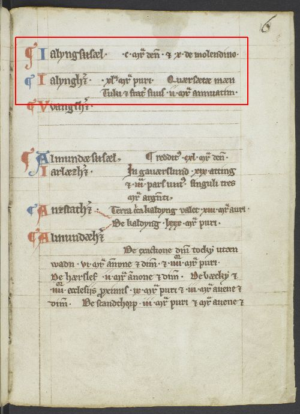
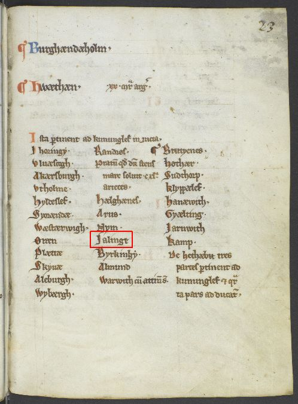
Oben die beiden entsprechenden Seiten aus "Kong Valdemars Jordbog" aus dem Online Bestand des Rigsarkivet in Kopenhagen- rote Umrandung bei "Jalyngsysæl" bzw. bei "Jalinge" von mir eingefügt - Screenshots vom 02.07.2023 - Lizenz: CC0 1.0 Universell - Eine Übersetzung des Werkes - allerdings nur ins Dänische - findet sich hier.
Danach wurde es aber jahrhundertelang still um den alten Königssitz Jelling.
Durch Knud J. Krogh (*1932 - 2023, dänischer Archäologe) wird in seinem Buch "Gåden om Kongs Gorms Grav - Historien om Nordhøjen i Jelling - Vikingekongernes Monumenter i Jelling, Bind 1, 1993", auf der S. 56 dieses Bild wiedergegeben:
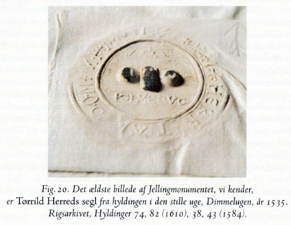
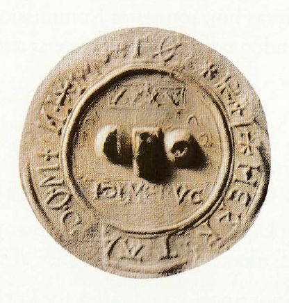
Wie Knud J. Krogh im erklärenden Text zum 1. Bild angibt, ist dieses Siegel von "Tørrild Herred" (Bezirk Tørrild im Ribe Stift im Amt Vejle - "fra hyldingen i den stille uge, Dimmelugen" - das steht übersetzt für "Die Stille Woche oder Karwoche" und ist die letzte Woche der Fastenzeit) in Wirklichkeit die erste und damit die älteste Darstellung der Jelling Monumente von 1535, also nochmal deutlich älter als das Rantzau Prospekt der Jelling Monumente von 1591! Das Original findet sich heutzutage im "Rigsarkivet" unter "Hyldinger 74, 1610" und ist auf Pergamentpapier.
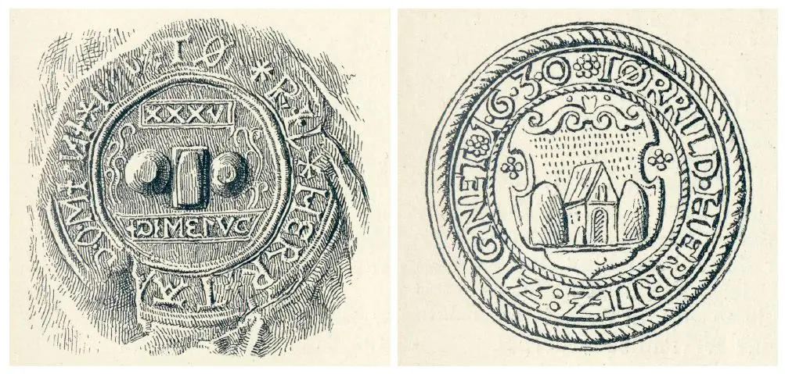
Hier die beiden Siegel von "Tørrild Herred" aus dem Jahr 1535 und 1630, die jeweils die Kirche zwischen den beiden Runensteinen abbildet. Quelle: Danmarks Kirker - Abhandlung zur Baugeschichte/Innenausstattung der Kirche aus dem Jahr 2022 (S. 3022 - beinhaltet aber auch die komplette Historie der Jelling Monumente) - Trap - Kongeriget Danmark / 3. Udgave 5. Bind : Aarhus, Vejle, Ringkjøbing, Ribe og Færø Amter samt Supplement og Stedregister - S. 379 - Tørrild Herred - Lizenz: CC-BY-SA
Das Original (zu links) findet sich heutzutage im "Rigsarkivet" unter "Hyldinger 74, 1610" und ist auf Pergamentpapier.
Das weltberühmte Rantzau Prospekt der Jelling Monumente von 1591, das sich erstmals in dem Buch "Hypotyposis Arcium, Palatiorum, Librorum, Pyramidum, Obeliscorum, Cipporum, Molarum, Fontium, Monumentorum & Epitaphiorum, ab ... Henrico Ranzovio, Prorege & Equite Holsato, conditorum ..." von Peter Lindeberg (*16.03.1562 - 16.07.1596, Jurist, Reisender, Kaufmann) zwischen den Seiten 122 und 123 befindet, gilt gemeinhin als die älteste Darstellung der Jelling Monumente, aber das obige Siegel von 1535 widerspricht dem. Auf jeden Fall ist diese Ansicht die älteste Darstellung des Runensteins von König König Harald Blauzahn. Die Seite mit dem "Großen Tier" wird hier allerdings nur als Pflanzenornamentik dargestellt.

Dieses Bild zeigt eine Fotografie des Originals, die ich am 26.09.2022 in der Königlichen Bibliothek - Den sorte Diamant - in Kopenhagen gefertigt habe Dort ist dieses Werk, das ja auch online eingesehen werden kann, über diesen Link für den Forschungslesesaal bestellbar.
Diese o.a. Darstellung beruht auf einer Tafel zu den Jelling Monumenten die Caspar Markdanner (*1533 - 22.09.1618 aus Søgard, Königlicher Beamter, Lehnsherr auf Koldinghus)
 Bildquelle: S. 3765 in der
Abhandlung
Rønninge Kirke /
Danmarks kirker - Fotograf: Arnold Mikkelsen /
Nationalmuseum - 2015 - Lizenz:
CC-BY-SA
Bildquelle: S. 3765 in der
Abhandlung
Rønninge Kirke /
Danmarks kirker - Fotograf: Arnold Mikkelsen /
Nationalmuseum - 2015 - Lizenz:
CC-BY-SA
1586 im Chor der Kirche aufstellen ließ. In dem Zusammenhang hatte er den großen Jellingstein aufrichten lassen, da der umgefallen und teilweise mit Erde bedeckt war. Die Tafel ist wohl am 01.07.1679 bei einem Brand der Kirche zerstört worden (siehe unten Beitrag O. Nielsen). Berichtet wird dazu von Ole Worm (*13.05.1588 - 31.08.1654, Arzt, Universalgelehrter und der Begründer der Runologie)
 Bildquelle:
Digitale Sammlung der Königlichen Bibliothek Kopenhagen -
Lizenz:
Public Domain
Bildquelle:
Digitale Sammlung der Königlichen Bibliothek Kopenhagen -
Lizenz:
Public Domain
in seinem berühmten Werk Danicorum Monumentorum Libri Sex aus dem Jahr 1643 auf der S. 329 - siehe auch unten / Inschrift der Tafel nach Ole Worm (*13.05.1588 - 31.08.1654, Arzt, Universalgelehrter und der Begründer der Runologie):

Der nächste zeitliche Bericht stammt von 1597 von Henrik Rantzau (*11.03.1526 - 31.12.1598, Statthalter des dänischen Königs für die königlichen Anteile an den Herzogtümern Schleswig und Holstein)
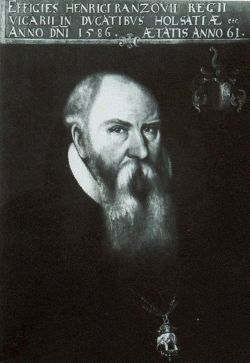
Bildquelle: Wikimedia - Lizenz: Public Domain
auf der
Spalte 62 (linke Spalte, etwa mittig) in seiner Abhandlung
"Cimbricae
Chersonesi descriptio", die 1739 im
Band 1 des 4-bändigen Werkes "Monumenta
inedita rerum Germanicarum, praecipue Cimbricarum et Megapolensium"
-
Im Jahr 1597 hat Bonaventura Vulcanius (*30.06.1538 - 09.10.1614, flämischer Gelehrter, Übersetzer und Humanist)
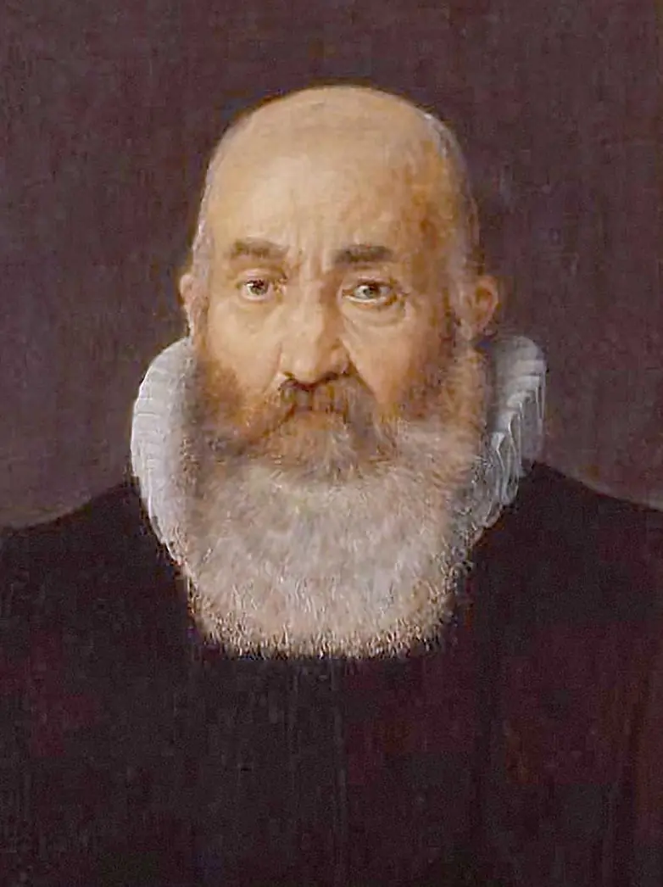
Bildquelle: Wikimedia - Lizenz: CC-BY-SAin seinem Werk "De literis et lingua Getarum sive Gothorum" auf der S. 46 und 47 die Inschrift der beiden Runensteine - nach Rantzau - wiedergegeben.
Um 1600 wohnten königliche Gäste in Jelling in einer Herberge, die König Friedrich II. (*1. Juli 1534 - 4. April 1588, König von 1559-1588)
 Bildquelle:
Wikipedia - Lizenz:
Public Domain
Bildquelle:
Wikipedia - Lizenz:
Public Domain
im Pfarrhof hatte einrichten lassen. Er hatte eine Straße zwischen den königlichen Burgen Koldinghus und Skanderborghus bauen lassen, die an Jelling vorbeiführte. Darüber wurde das Interesse an den Monumenten in Jelling bei zahlreichen Reisenden geweckt.
Ole Worm (*13.05.1588 - 31.08.1654, Arzt, Universalgelehrter und der Begründer der Runologie)
Bildquelle:
Digitale Sammlung der Königlichen Bibliothek Kopenhagen -
Lizenz:
Public Domain
hat Jelling im Jahre 1621 besucht. Er hatte den dänischen König Christian IV. (*12.04.1577 - 28.02.1648)
 Bildquelle:
Wikipedia - Lizenz:
Public Domain
Bildquelle:
Wikipedia - Lizenz:
Public Domain
dazu bewogen am 11. August 1622 einen Brief an die Bischöfe von Dänemark und Norwegen zu senden, um darüber die Pfarrer im Land auzufordern alle Informationen zu Denkmälern, Runensteinen, Grabhügel usw. an ihn zu melden, um die älteste Geschichte Dänemarks zu beleuchten. Unterstützer oder gar treibende Kraft war wohl Christian Friis (*4. November 1581 auf Gut Krastrup in Farstrup - 01. Oktober 1639, dänischer Adliger und königlicher Kanzler).
 Bildquelle:
Wikipedia - Lizenz:
Public Domain
Bildquelle:
Wikipedia - Lizenz:
Public Domain
Der Originaltext dieses Briefes lautet auszugsweise: "Wor gunst tillforn. Wy bede Eder och wille, at I Eders mueligste flid ahnwender allewegne wdj Eders stigt att opsøge och antegne alle slags antiquiteter och documenter effter medfølgende fortegnelsis indhold, och att I saadanne med flid lader optegne och engang inden Paaske førstkommendis wdj wortt cantzelie lader indleffuere. Dermed skie wor willghe. Befalendis Eder Gud. Skreffuitt paa wortt [slott] Kiøbenhaffn, den 10. augusti anno 1622. Vnder vort signett.Christian."
Ein unsignierter Bericht zu Jelling ging daraufhin bei Worm ein - vermutlich aus dem Jahr 1638 vom damaligen Pfarrer in Jelling Jørgen Pedersen Lemvig (*1603 - 13.01.1679):
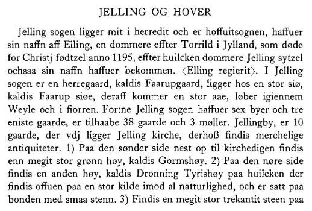
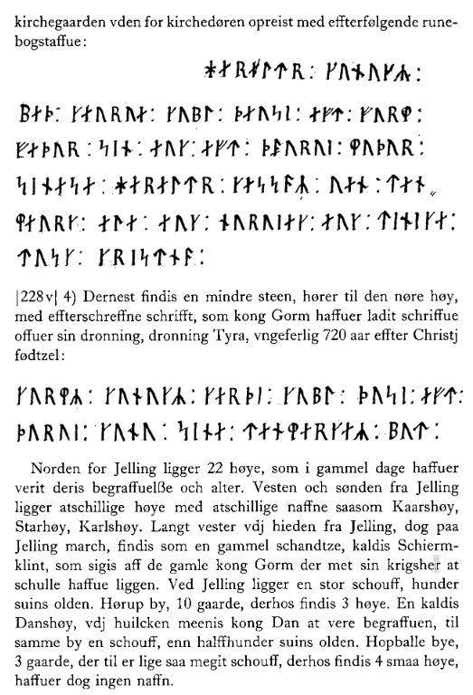
Quelle: Præsteindberetninger til Ole Worm, Bind 1, Indberetninger fra Ålborg og Ribe Stifter 1625-42, Frank Jørgensen, S. 190/191 (Online verfügbar hier).
Jon Skonvig (*1600 - 1664, Pfarrer) wurde von Ole Worm ins Land hinausgeschickt um Altertümer zu erfassen. Er war 1629 in Jelling und hat dabei nur diese Zeichnungen der beiden Runensteine angefertigt.
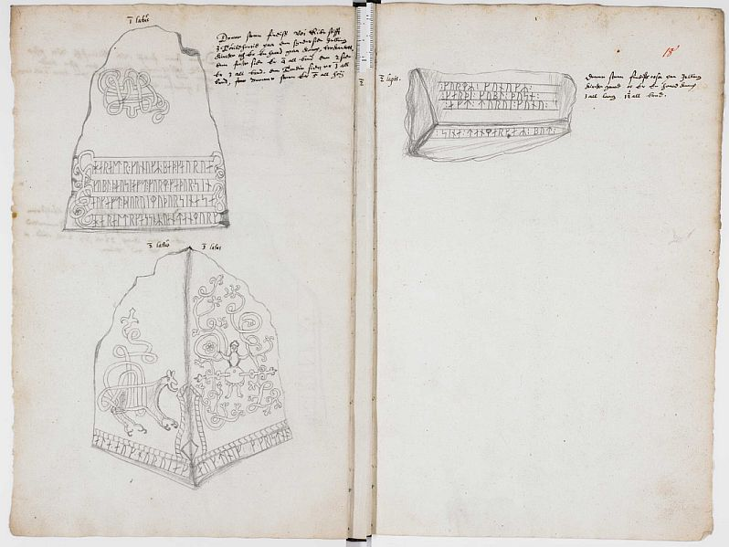
Die Aufzeichnungen von Jon Skonvig - sechs Handschriften - haben sich in der sogenannten "Arnamagnæanske samling, AM 366-371 fol." (zu deutsch: Arnamagnäanische Sammlung) erhalten.
Über diesen Link kann diese Doppelseite 17v / 18r der A.M. 367 fol über die Webseite "www.handrit.is" eingesehen werden. Details und die Wiedergabe seiner Notizen findet sich bei meinen Ausarbeitungen zum jeweiligen Runenstein.

Am Mittwoch, 28.09.2022, war ich in der Universität Kopenhagen in der Arnamagnæanske Samling und durfte das Original - AM 367 fol. - in Händen halten und eingehend fotografieren. Man bat mich aber von einer Veröffentlichung meiner Fotos abzusehen und stattdessen auf die digitalisierte Handschrift über www.handrit.is zu verweisen.
Unter GKS 2370 kvart finden sich in der Königlichen Bibliothek in Kopenhagen von Ole Worm erhaltene Teile seines Originalentwurfs seiner Monumenta Danica aus dem Jahr 1623. Daraus entstand sein bahnbrechendes Werk "Danicorum Monumentorum Libri Sex, Hafniae, 1643". Die Passage zu Jelling habe ich hier aufbereitet:
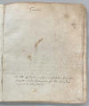 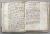 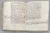 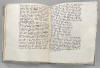 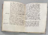 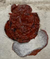


Dieses Werk habe ich bei meinem Kopenhagen Studien Tripp 2022 am 26.09.2022 in der Königlichen Bibliothek - Den sorte Diamant - in Kopenhagen auszugsweise fotografiert.
Durch Emil Leopold Gigas (*23.08.1849 - 08.09.1931, Bibliothekar, Literaturhistoriker) wurde das Werk "E. Gigas: Katalog over Det store kongelige Bibliotheks Haandskrifter. Første Bind (1903)" herausgegeben. Darin findet sich auf der S. 14 dieser Eintrag dazu:
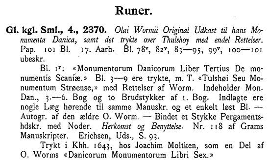
Gigas verweist darin auch auf Jon Erichsen (*31.08.1728 - 29.03.1787, isländischer Bibliothekar und Verfasser)
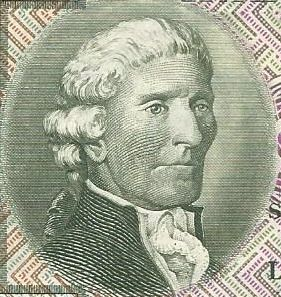
Bildquelle: Wikipedia - Lizenz: Public Domainder diese Handschrift in seiner früheren Auflistung "Udsigt over den gamle Manuscript-Samling i det store Kongelige Bibliothek" von 1786 auf der S. 93 unter der Nummer 2 aufgelistet hatte. Er war seit 1781 als Bibliothekar bei der königlichen Bibliothek in Kopenhagen angestellt und hat die damals noch völlig ungeordnete Sammlung erstmals grundlegend katalogisiert - Titelblatt. Eine deutschsprachige Rezension zu diesem Werk findet sich in der Allgemeine Literatur- Zeitung - März 1788. Außerdem führt Gigas den Namen Hans Gram (*28.10.1685 - 19.02.1748, Philologe und Historiker) an. Er war von 1730-48 Leiter der Königlichen Bibliothek. Er gilt als der erste moderne Historiker Dänemarks. Diese Handschrift befand sich vormals mit der Nummer 118 in seiner Sammlung (Umfasste ca. 24.000 Bücher und ca. 300 Handschriften) und wurde 1750 in den Bestand der Königlichen Bibliothek in Kopenhagen aufgenommen. Seine Bücher wurden nach seinem Tod nämlich auf zwei Auktionen versteigert und gingen größtenteils ins Ausland. Die Handschriften hingegen erwarb die Königlichen Bibliothek in Kopenhagen damals komplett. Ein Bildnis von Hans Gram findet sich z.B. hier.
Im Jahr 1634 hat
Johann Adolph Cypraeus (*1592 -
Oktober 1636, katholischer Pastor) das Werk "Annales
Episcoporum Slesvicensium" veröffentlicht. Unter Berufung auf das
Werk von
Henrik
Rantzau (
Noch vor seinem u.a. Standardwerk hat Ole Worm im Jahr 1636 in dem Buch "Runer seu Danica literatura antiquissima, vulgò Gothica dicta luci reddita" auf der S. 55 kurz zu "... Regis Gormonis & Haraldi monumentum quod Jellinga..." berichtet.
07.01.2025 - Erst die Tage fand ich im Internet per Zufall die 60-seitige digitalisierte Abhandlung von Johannes Thomae Agrivillensis Bureus, genannt Johan Bure, (*15./25.03.1568 - 22.10.1652, schwedischer Runenforscher, Mystiker, Königlicher Hofarchivar und Schriftsteller),
 Bildquelle:
Wikipedia
- Lizenz:
Public Domain - Bildnis von 1627
Bildquelle:
Wikipedia
- Lizenz:
Public Domain - Bildnis von 1627
mit dem Titel "Den svenska runeskriften uti literatura danica antiquissima [ms]". Das Entstehungsjahr der Handschrift wird mit vermutlich 1641 angegeben. In der umfangreichen Literaturliste zu Jelling, die im Rahmen des Jellingprojektet erstellt wurde und eigentlich alles beinhaltet, was etwas mit Jelling zu tun hat, taucht die Handschrift komischerweise aber nicht auf.
 Bildquelle für alle drei Seiten:
Litteraturbanken.se
Bildquelle für alle drei Seiten:
Litteraturbanken.se
Auf diesen beiden Seiten geht er dann auf die beiden Runensteine
von


Von Ole Worm erschien 1643 - über 20 Jahre nach seinem Besuch vor Ort - sein bahnbrechendes Werk "Danicorum Monumentorum Libri Sex, Hafniae, 1643". Ab der S. 326 bis zur S. 341 bringt er eine erste und vollständige Beschreibung über Jelling heraus.

Dieser Screenshot des Titelblattes findet sich in einer digitalisierten Ausgabe im Internet über die Bayerische Staatsbibliothek / MDZ Münchener DigitalisierungsZentrum Digitale Bibliothek - urn:nbn:de:bvb:12-bsb10800415-0 - abgerufen 20.06.2023.
Die u.a. Gesamtdarstellung von Jelling auf der S. 328 habe ich am Montag, 26.09.2022, in der Königlichen Bibliothek - Den sorte Diamant - in Kopenhagen selbst fotografiert.

Lis Jacobsen (*29.01.1882 - 18.06.1961, dänische Runologin und Archäologin -link-LIVES - Taufe - Melderegister - Hochzeit)
 Bildquelle:
Wikipedia - Lizenz:
Public Domain
Bildquelle:
Wikipedia - Lizenz:
Public Domain
hat sich dankenswerterweise zur Aufgabe gemacht dessen lateinische Beschreibung über Jelling durch cand. mag. G. Hermansen ins Dänische übersetzen zu lassen. Sie hat dies in dem Artikel "Ole Worms beskrivelse og tolkning af Jelling-monumentet" in dem Vejle Amts Aarbog, Ausgabe 1937, auf den S. 1-28 mit Anmerkungen veröffentlicht.
Stephan Hansen Stephanius (* 23.07.1599 - 22.04.1650, dänischer Philologe und Historiker) hat in seinem 1645 erschienenen Werk "Notae uberiores in Historiam Danicam Saxonis Grammatici" (Kommentierte Ausgabe von Saxos Geschichte der Dänen) auf den S. 202-204 unter Rückgriff auf das Material / die Druckplatten von Ole Worm (wie später auch Peder Hansen Resen s.u.) zu Jelling und seinen Monumenten berichtet.
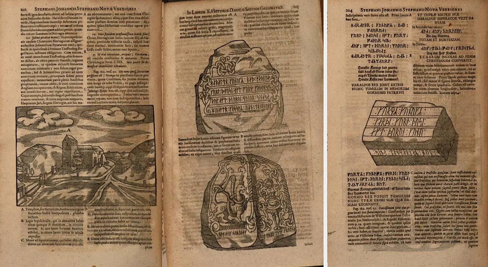
Etwa zeitgleich erschien das Werk "Regum Daniae Icones Accurate expressae" von Albert Haelwegh (ca. 1620 - 1673, Kupferstecher) und Georg Holst (Verleger), Kopenhagen 1646. Es enthält 102 Kupferstiche der dänischen Könige vom Sagenkönig Dan bis auf König Christian IV. (*12.04.1577 - 28.02.1648)
Bildquelle:
Wikipedia - Lizenz:
Public Domain
Dies sind neben dem
kunstvollen Titelblatt seine (fiktiven) Bildnisse von
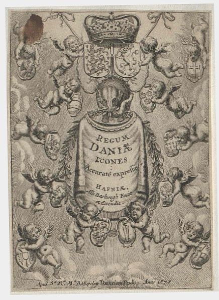
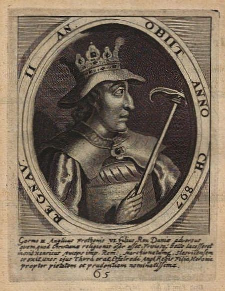
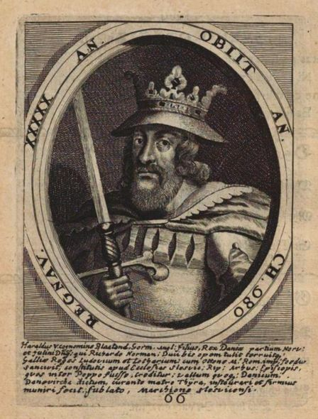
Bildquelle: Titelblatt / König Gorm / König Harald - Screenshots vom 09.07.2023
Im Jahr 1685 wurde ein ähnliches Werk von Johann Christoph Beer aus Nürnberg publiziert. Es trug den Titel "Der Königen in Dänemark. Leben, Regierung und Absterben /von dem Ersten König Dan an / Biß auf den izt=regierenden König Christian den Fünfften. Aus den bewährtesten Dähnischen Geschicht=Schreibern hervorgesuchet und zusammen=getragen / auch mit ihren wahrhafften Bildnissen ans Liecht gegeben". Die Portraits sind hier seitennverkehrt im Verhältnis zu den Originalen aus dem Jahr 1646.
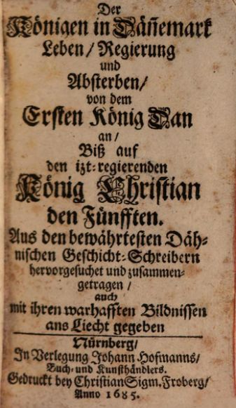
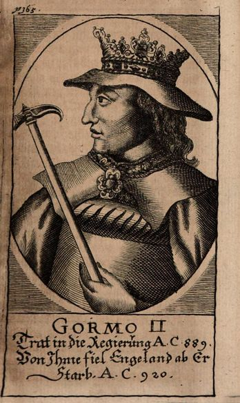
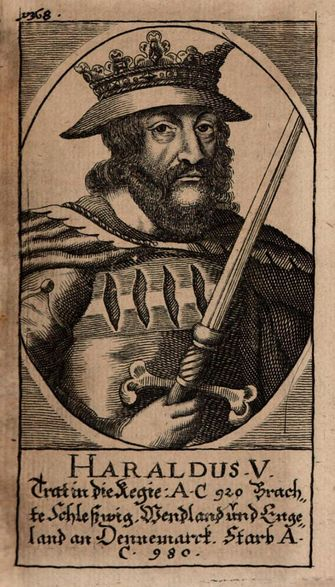
Bildquelle: Google Books - Screenshots vom 09.07.2023
In den Aarbøger for nordisk oldkyndighed og historie, Ausgabe 1895, findet sich ab der S. 252 ein interessanter Aufsatz von O. Nielsen mit dem Titel "Bidrag til Jellings og dets mindesmarkers historie". Darin beschäftigt er sich auf der S. 267 u.a. mit einem schriftlichen Befehl des König Frederik III. von Dänemark und Norwegen (* 18. März 1609 - 09. Februar 1670)
 Bildquelle:
Königl. Sammlung - Schloss Rosenborg - Lizenz:
Public Domain
Bildquelle:
Königl. Sammlung - Schloss Rosenborg - Lizenz:
Public Domain
vom 28.09.1648. Der verweist darin auf seinen vorausgegangenen Besuch in Jelling. Da sich die erste Tafel (von Caspar Markdanner - siehe oben) vor Ort als fehlerhaft erwiesen hatte, wurde der örtliche Pastor vom König angewiesen eine korrekte Tafel aufstellen zu lassen. Der Witwe des damaligen Lehnsmannes von Koldinghus, Frau Margrete Lunge - Anmerkung: Margrete Bille, geb. Jørgensdatter Lunge, *01.05.1616 - 07.10.1653, Witwe von Mogens Henriksen Bille (*13.06.1617 - 25.04.1648 - Enkelin von Caspar Markdanner, schrieb er in diesem Brief, dass sie für die Bezahlung der Tafel und des Pfarrers sorgen solle, was ihr dann erstattet würde. Da sie dem Befehl offenbar nicht wie erhofft nachkam, hat der König in einem neuerlichen Brief vom 13.09.1649 an den nun neuen Lehnsmann, Ebbe Gyldenstjerne (*1625 - Mai 1677, Lehnsmann auf Koldinghus 1649-51), einen weiteren Brief in der Sache aufgesetzt und um Erledigung bei versprochener Bezahlung gebeten. O. Nielsen schreibt dann weiter (übersetzt): "Auch dieser Befehl scheint nicht befolgt worden zu sein; in den Konten für das Lehen Koldinghus scheint es keine Kostennote für eine neue Tafel zu geben, daher ist es wahrscheinlich, dass es die Tafel von Caspar Markdanner war, die (01. Juli) 1679 zusammen mit der Kirche verbrannte." Weiter heißt es dann, dass dem Pfarrer Jørgen Pedersen die Jelling Monumente wirklich am Herzen lagen. Deshalb schrieb er am 23.03.1635 an den König - Christian IV. (*12.04.1577 - 28.02.1648 - Bildnis siehe oben) - einen Brief und bat um eine schützende Zauneinfriedung der Hügel; Holz gebe es doch genug im Wald, trug er vor. Da es dann offenbar nur ein Reisigzaun wurde, beschwerte sich der Pfarrer später beim König, der dem Lehnsmann Ernst Normand (*26.09.1579 - 02.10.1645, dänischer Höfling und Gutsbesitzer) fast ein Jahr später am 10.03.1636 schriftlich auftrug einen steinernen Zaun um die Grabhügel zu errichten. Über diesen Link findet man doch heutzutage tatsächlich diesen königlichen Befehl im Original im Online Bestand - Jydske Tegnelser IX, S. 282 - des Dänischen Rigsarkivet. In Druckbuchstaben kann man sich diesen Brief in einem Beitrag von O. Nielsen mit dem Titel "To Documenter til Oplysning om Jellingehøienes Fredning" unter Punkt 1 auch hier anschauen: Danske Samlinger for Historie, Topographi, Personal - Band 1 - 1865-66 - S. 101.
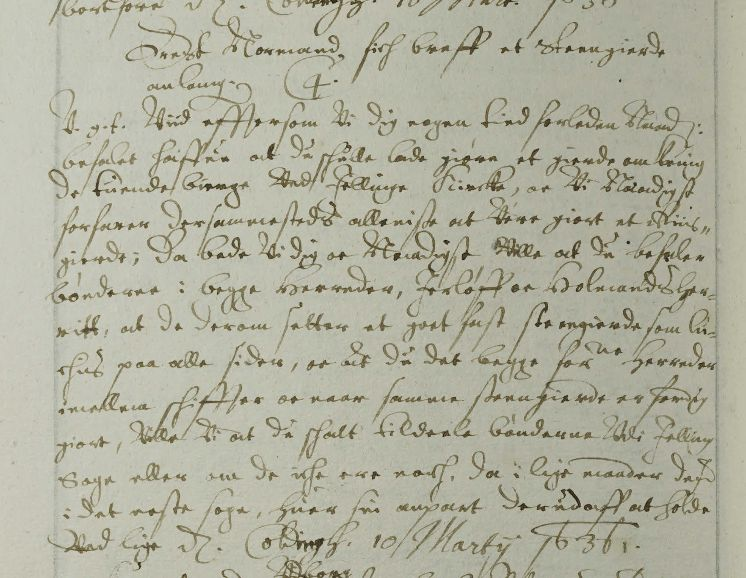
Screenshot vom 25.06.2023 - Frei von Urheberrechten
Der königliche Befehl zur
Errichtung einer Steinmauer um die beiden Hügel - siehe oben -
damit die Menschen nicht wahllos darauf herumklettern - wurde offenbar
umgesetzt. In dem Buch mit dem Titel "Kongehøiene
i Jellinge og deres Undersøgelse efter Kong Frederik VII's Befaling i 1861"
steht nämlich auf der
S. 5: "
Einige der ältesten detaillierten dänischen Karten stammen aus der Mitte des 16. Jahrhunderts, als der Kartograf Johannes Mejer (*1606 - 1674)
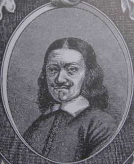
Bildquelle: Wikipedia - Lizenz: Public Domaineine große Anzahl Karten des damaligen dänischen Königreichs anfertigte. Ein charakteristisches Merkmal von Mejers Karten sind unter anderem die feinen Signaturen. Dörfer und Gemeinden sind mit kleinen Gebäuden und Kirchen gekennzeichnet und die Bäche durchschneiden die Landschaft wie kleine Flüsse. Auf zwei Karten ist Jelling mit einer Kirchensignatur gekennzeichnet, die den Status der Stadt als Pfarrstadt widerspiegelt. Darüber hinaus hat Mejer Jelling zwei hohe Signaturen eingezeichnet eine auf jeder Seite der Kirche die den Nord- und Südhügel wiedergeben. Johannes Mejer wusste daher nicht nur um die hohen Hügel in Jelling, sondern betrachtete sie auch als ein so wichtiges Merkmal der Stadt Jelling, dass sie auf seinen Karte eingezeichnet werden mussten.


Die Original Karten - frei von Urheberrechten - können über die Digitale Sammlung der Königlichen Bibliothek in Kopenhagen aufgerufen - links von 1650 / rechts von 1659 - und heruntergeladen werden.
Johannes
Mejer wurde 1606 in Husum in Schleswig als
ältester Sohn des Pfarrers Johannes Mejer und seiner Frau
Elisabeth Jüngling
geboren. Nach dem frühen Tod seines Vaters im Jahr 1617 kam
Johannes Mejer in die Obhut seines Onkels mütterlicherseits, wo er angeblich in
seiner Kindheit als Hirte diente, bis seine guten Fähigkeiten bekannt wurden.
Anschließend reiste er nach Kopenhagen, wo er bei seinem ältesten Onkel Bernhard
Mejer lebte, während er Mathematik und Astronomie
studierte.
Nach Abschluss seines Studiums zog
Johannes
Mejer 1629 nach Husum zurück, wo
er sich als Lehrer verdiente, gleichzeitig Almanache veröffentlichte und seine
kartografischen Studien fortsetzte. Im Jahr 1636 begann er
seine kartografische Produktion mit der Kartierung der Marschlandschaft rund um
Husum. Mehrere gut ausgeführte Kartenproduktionen führten dazu, dass Johannes
Mejer 1647 zum königlichen Mathematiker in Kopenhagen ernannt
wurde, und bis 1659 fertigte er eine sehr große Anzahl von
Karten unterschiedlichen Charakters und Maßstabs an. Anschließend kehrte er nach
Husum zurück, wo er bis zu seinem Tod im Jahr 1674 lebte.
Als Johannes Mejer zum königlichen Mathematiker ernannt wurde, musste er eine Übersichtskarte sowie mehrere Spezialkarten des dänischen Königreichs anfertigen. Im Laufe seiner kartografischen Karriere war Mejer äußerst produktiv und hatte bereits vor seiner Ernennung im Jahr 1647 mehrere Spezialkarten erstellt. Den qualitativen Höhepunkt bildet dabei ein größeres Kartenmaterial der alten Kreise Åbenrå bzw. Slien (beide datiert auf 1641). Leider wurde ein Plan für einen großformatigen nordischen Atlas aufgrund der Karl-Gustav-Kriege in den Jahren 16571660 nie umgesetzt. Johannes Mejer erstellte auch eine Reihe historischer Karten, zu denen unter anderem eine kartografische Darstellung von Paradiesgarten und eine Kartierung mehrerer Herden vor der Südwestküste Jütlands gehören, die nach einer großen Sturmflut verschwunden sein sollten (Der große Untergang) im Jahr 1362. Die Karten basieren bestenfalls auf historischen Dokumenten, basieren jedoch überwiegend auf zweifelhaften Quellen und mündlichen Überlieferungen unter Hinzufügung freier Fantasie. Allerdings war die Herstellung historischer Karten im 16. Jahrhundert keine Besonderheit, und obwohl spätere Kritik an ihrem Quellenwert berechtigt ist, hat die Herstellung historischer Karten Mejers Gesamtwerk zeitweise einen unfair schlechten Ruf verliehen.
Für die damalige Zeit waren Mejers Karten beispiellos, und einige betonen, dass erst im 18. Jahrhundert Karten erstellt wurden, die die von Mejer in Genauigkeit und Detailliertheit übertrafen. Neben dem kartografischen Wert ist Mejers Karte auch die älteste Quelle für eine Reihe von Ortsnamen. Dies gilt insbesondere für die Feld- und Naturnamen, die auf den Einzelhandelskarten des alten Kreises Åbenrå erscheinen. Leider hat Mejer die dänischen Ortsnamen weitgehend in eher deutsch klingende Formen verfälscht, was bedeutet, dass ihr Wert als älteste Originalquelle nicht hoch ist. Aus heutiger Sicht sind die Karten von Johannes Mejer eher ungenau, aber sie sind schöne Beispiele früher dänischer Kartographie. Die Einzelhandelskarten bieten außerdem einen einzigartigen Einblick in die dänische Kulturlandschaft und Landwirtschaft des 17. Jahrhunderts.
Die nächste Erwähnung der beiden Runensteine findet sich bei Johannes Meier (1660, Lehrer und Verfasser) in seinem Werk Liber monumentorum Danicorum, qvi monumenta Danica Olai Wormii partim emendat partim locupletat von 1654 (Seite 37 links/rechts) - Königlichen Bibliothek in Kopenhagen - GKS 2371 kvart
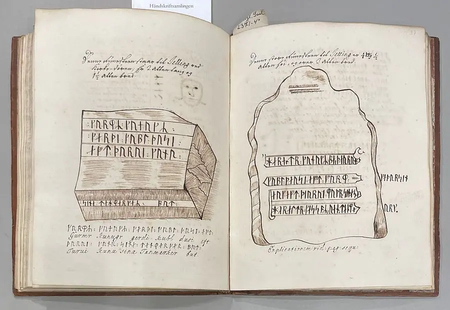
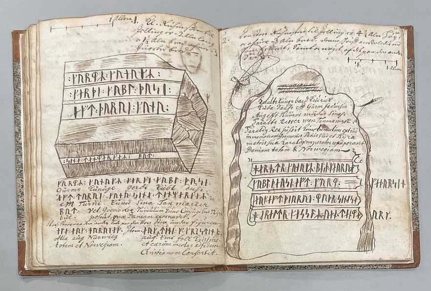
Peder Hansen Resen (*17.06.1625 - 01.06.1688, Jurist und Historiker)
 Bildquelle:
Wikipedia - Lizenz:
Public Domain
Bildquelle:
Wikipedia - Lizenz:
Public Domain
Nur geringe Teile wurden aber schon zu seiner Lebzeit gedruckt. Die Folianten wurden wenige Jahre nach seinem Tod 1692 an die Königliche Bibliothek Kopenhagen übergeben. Aufbewahrt wurden sie auf dem Dachboden der Trinitatis Kirche. Dort wurden sie fleißig studiert, abgeschrieben und zeitweise ausgeliehen. Leider wurde dann ein Großteil davon beim Kopenhagener Großbrand 1728 zerstört. Es hat sich neben einigen Originalseiten - siehe Arnamagnäanische Sammlung - AM 359 fol. / AM 360 fol. / AM 361 fol. und AM 362 fol. (digitalisiert) - nur eine (verkürzte) Abschrift und außerdem Kupferstiche von etwa 200 Städteansichten aus der Vogelperspektive erhalten. Originale dieser AM 359/360/361 fol sind über die Universität Kopenhagen - Institut for Nordiske Studier og Sprogvidenskab (NorS) - AM 359 fol / AM 360 fol / AM 360 fol (Karten) / AM 361 fol - in sw abrufbar. Eine zweite (verkürzte) Ausgabe war von Vincent Lerche (*04.04.1666 - 28.07.1742, Jurist, Architekt) beauftragt worden, diese wurde aber beim Brand von Schloss Christiansborg im Jahr 1794 vernichtet.
In der Königlichen Bibliothek in Kopenhagen wird seit 1803 in der Sammlung Uldall (186 folio) diese einzige verbliebene Ausgabe, die in den 1750er Jahren durch den Hofbaumeister Laurids de Thurah (*04.03.1706 - 06.09.1759, dänischer Architekt, Baumeister, Architekturhistoriker und Topograf)
 Bildquelle:
Wikimedia - Lizenz:
Public Domain
Bildquelle:
Wikimedia - Lizenz:
Public Domain
aus verstreuten Resten des Atlas Danicus in 7 Bänden rekonstruiert worden war, aufbewahrt:
Wie diesem Titel zu entnehmen ist, gehörte dieses Exemplar vormals Adam Gottlob Graf von Moltke (*10.11.1710 - 25.09.1792, Staatsmann, Diplomat).
 Bildquelle:
Wikimedia - Lizenz:
Public Domain
Bildquelle:
Wikimedia - Lizenz:
Public Domain
Nach dessen Tod erwarb Herman Treschow (*11.12.1739 - 02.05.1797, Professor für Theologie, Pfarrer) diese Ausgabe. Peter Uldall (*29.06.1743 - 11.11.1798, Jurist, Theologe)
 Bildquelle:
Wikimedia - Lizenz:
Public Domain
Bildquelle:
Wikimedia - Lizenz:
Public Domain
wiederum kaufte sie für 170 Rigsdaler (Rigsdaler zu 24 Skilling - damals 1 ½ Mark) nach dessen Ableben. Er hatte aber nicht lange Freude daran, denn er starb ein Jahr später an einem Schlaganfall. Sein Sohn, Justizrat W. A. Uldall, schenkte diese Ausgabe der Kgl. Bibliothek im Jahr 1803, wo dieses großartige Werk noch heute verwahrt wird (Ein Band hat übrigens die Größe H/B/D von 40 cm x 29,5 cm x 9,5 cm).
Im Band VI - auf den Seiten 744-48 - findet sich sein Eintrag zu den Jelling Monumenten / Runensteinen veröffentlicht, den ich am 28.09.2022 in der Königlichen Bibliothek in Kopenhagen fotografieren durfte.


Weiterführende Informationen zu diesem Werk finden sich in meinen Ausarbeitungen zum jeweiligen Runenstein.
Ein weiterer Bericht zu Jelling stammt von Troels Arnkiel (Getauft 28.04.1638 - 07.09.1712, lutherischer Pastor und Altertumsforscher). In seinem im Jahr 1702 erschienen Werk "M. Trogilli Arnkiels, Probsten und Pastoren zu Apenrade Jn dem Hertzogthumb Schleßwig-Hollstein/ Außführliche Eröffnung Cimbrische Heyden-Begräbnisse : Wie unsere Vorfahren Cimbrischer Nation/ Die Sachsen/ Guten/ Wenden und Fresen/ und die von denselben herstammende Mitternächtige Völcker I. Jhre Begräbniß-Gebräuche/ II. Jhre Todten-Gräber/ III. Jhre Grab-Krüge/ IV. Ihre Grab-Schrifften An- und eingerichtet/ ... / Erklähret und mit vielen Kupfferstücken beleuchtiget von M. Trogillo Arnkiel/ Probsten und Pastoren zu Apenrade" macht er im Theil 3, S. 275, unter § 5 Anmerkungen zu Jelling, verschweigt aber den kleinen Runenstein.

Eine Seite zuvor bringt er (mit dem Hinweis zu "Pag: 275") diese zeichnerische Darstellung der Jelling Monumente die natürlich als Vorlage den Rantzau Prospekt der Jelling Monumente von 1591 hat. Allerdings wurde dieser Prospekt zuvor überarbeitet und zeigt nun beide Runensteine unter "B", und auf dem rechten Hügel unter "F" den "Grab-Stein des Königs..." der von dort zur Kirche verbracht wurde.

Quelle: Universitäts- und Landesbibliothek Sachsen-Anhalt - https://nbn-resolving.org/urn:nbn:de:gbv:3:1-750088 - Lizenz: Public Domain 1.0 - Screenshots vom 24.06.2023
Im Jahr 1704 war es dann auf Geheiß von König Friedrich IV. (*21.10.1671 - 12.10.1730)
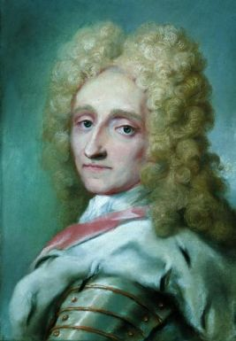
Bildquelle: Wikipedia - Lizenz: Public Domainzur ersten bekannten Untersuchung des Nordhügels, auch "Königin Thyras Hügel" genannt, in der Hoffnung das Grab von Königin Thyra zu finden, gekommen. Die Arbeiten fanden im Zusammenhang mit der Aufstellung der Landmiliz bei Fårup Agre bei Jelling statt. Aus der Landmiliz konnte der König die nötigen Arbeitskräfte für die Ausgrabungen besorgen. Die Landmiliz wurde 1701 von König Friedrich IV. gegründet. Hintergrund für die Gründung war die Kriegsgefahr, die Dänemark im Jahr zuvor erlebt hatte, als der schwedische König Karl XII. (*27.06.1682 - 11.12.1718)
Bildquelle: Wikipedia - Lizenz: Public Domain
in
Humlebæk
auf
Seeland landete. Diese Aktion hatte erhebliche Mängel in der
militärischen Bereitschaft
Dänemarks
offenbart. Die Gründung der Landmiliz bedeutete, dass ein
Grundbesitzer für jeweils 20 Fässer Hartgetreide einen Soldaten
stellen musste. Jeden Sonntag mussten sich die Soldaten vor der Kirche treffen
und Übungen durchführen. Ungehorsam oder Trunkenheit während der Übung zog eine
stundenlange Strafe mit Reiten auf dem Holzpferd nach sich. Zur Miliz konnten
nur Männer und junge Hausbesitzer eingezogen werden. Mit der Einführung der
Landmiliz wurden auch nationale Uniformen eingeführt.
In
einer Senke oben auf dem Nordhügel sammelte sich seit ewigen
Zeiten Regenwasser in einem Teich, in dem die Bürger von
Jelling
Wasser holen konnten. Bei der nun durchgeführten Untersuchung
des Hügels wurde der Wasserspiegel im Teich gesenkt. Im Liber Daticus"
der
Jelling-Kirche,
einer Aufzeichnung wichtiger Ereignisse und Umstände in der Gemeinde, notierte
der Pfarrer von
Jelling,
Poul Wedel (*08.01.1724 -
Januar 1782), am 26.11.1755, was man von der damaligen
Untersuchung noch im Gedächtnis behalten hatte. Der König
erlaubte den Bauern offenbar an der Nordseite des Hügels einen Abfluss für den
Brunnen zu graben, wohl in deren Hoffnung, dass sich dessen Wasser unten sammelt
und sie nicht immer auf den Hügel klettern müssen. Nachdem das Wasser aus
dem Teich abgeflossen war, versuchten sie laut einer anderen Notiz in Liber
Daticus erfolglos, mit einer 13 Ellen langen Stange den Grund zu
erreichen. Weitere Ergebnisse der Ausgrabung sind nicht bekannt und es gelangten
auch keine Fundstücke in die Königliche Kunstgalerie in
Kopenhagen.
Quelle:
Jellingprojektet - 1704 Frederik IV lader grave i Nordhøjen
Dazu heißt es auch in dem Buch mit dem Titel "Kongehøiene i Jellinge og deres Undersøgelse efter Kong Frederik VII's Befaling i 1861" auf der S. 5/6 (übersetzt): "Darüber heißt es in einem Liber Daticus im Archiv von Jelling Præstegaard: Laut dem Bericht eines alten Mannes, Anders Jensen, soweit er sich erinnern kann, wurde Thyras Hügel von Bürgern der Stadt Jelling aufgrund einer Königlichen Order 1704 ausgegraben, als dieser an der Pfingstparade auf den Feldern von Faarup anwesend war. Ansonsten berichten er und eine alte Frau hier in der Stadt, dass es bis zu seiner Ausgrabung immer zahlreiche Karpfen in dem Teich auf dem Hügel gegeben habe. Die alte Frau sagt, und als das Wasser ausgegangen war, suchten sie mit einer 13 Ellen langen Stange in einem Loch auf dem Hügel, um zu sehen, ob man den Boden erreichen könne, aber es war nicht möglich. Im selben "Liber Daticus" heißt es an anderer Stelle: Nördlich des Kirchhofs befindet sich ein sehr großer Hügel, in dem Königin Thyra sich begraben ließ, und es ist auch bemerkenswert, dass sich oben auf dem Hügel ein kleiner Teich befindet, der selten ausgetrocknet sei. In früheren Zeiten wurde berichtet, sei er noch nie trocken gewesen, weiß man hier. König Friedrich IV. ließ die Bauern auf seinen Befehl hin versammeln und auf der Nordseite des Hügel graben. Es handelte sich gewissermaßen um eine runde Strecke von 8 bis 10 Ellen mit Wasser gefüllt." In diesen Berichten geht es vor allem um den Brunnen auf Thyras Hügel, aber sie enthalten nichts darüber, dass bei den Ausgrabungen etwas gefunden wurde. Es ist ziemlich sicher, dass König Friedrich IV., der 1704 selbst in Jelling anwesend war, die Grabkammer weder fand noch von seinen Nachforschungen profitierte, da alle Berichte darüber fehlen. Im Jahr 1721 war der König zusammen mit Königin Anna Sophie von Reventlow (*16.04.1693 - 07.01.1743)
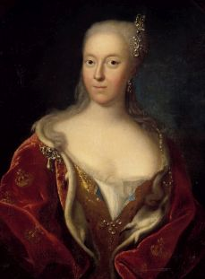
Bildquelle: Wikipedia - Lizenz: Public Domainund Prinzessin Charlotte Amalie (*06. Oktober 1706 - 28. Oktober 1782)
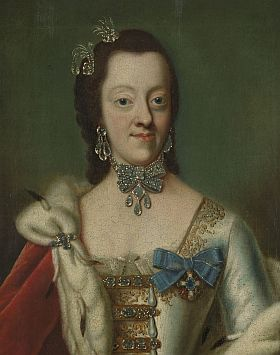
Bildquelle: Wikipedia - Lizenz: Public Domainwieder in Jelling, und der Priester, Mag. Mouritz Mouritzen Höyer (*11.03.1678 - 30.03.1750, Pfarrer in Jelling seit 1702, ab 1724 in Vejle), musste bei dieser Gelegenheit die Runensteine und Grabhügel vorführen und erklären, über die er später ein kleines Buch schrieb: Encomion Jellingense, das noch im Manuskript vorliegt."
In der Königlichen Bibliothek - Den sorte Diamant in Kopenhagen wird unter der Signatur Thott 751 folio die o.a. Handschrift mit dem Titel "Encomium Jellingense" von Mag. Mouritz Mouritzen Höyer aus dem Jahr 1721 verwahrt. Es handelt sich um mehrere Aufzeichnungen in einer Sammlung, wobei dieses Kleinod den "Teil c" darstellt.
Bei meinem Besuch am Dienstag, 27.09.2022, in der Königlichen Bibliothek in Kopenhagen durfte ich dieses Werk in Händen halten und fotografieren. Das musste ich natürlich über das Internet und einen Bibliothek-Account vorbestellen. Daraus habe ich diese pdf-Datei erstellt.

Höyer war ab 1702 Pfarrer in Jelling und musste auf königlichen Befehl zum Besuch der Königin Anna Sophie von Reventlow (Frau des dänischen/norwegischen Königs Friedrich IV. ) - in Begleitung ihrer Stieftochter Prinzessin Charlotte Amalie - am Dienstag, 05. August 1721, einen mündlichen Vortrag über Jelling und seine Monumente vor ihr halten. In der Königlichen Bibliothek befinden sich davon aber mehrere Abschriften (Thott 1471 kvart / Uldall 465 kvart / Additamenta 193 kvart / GKS 740 fol. / NKS 800 kvart / dazu noch eine im Landsarkivet for Fyn, Odense, Karen Brahes Bibliotek, C III,2 (siehe S. 81 = S. 85 in der pdf-Datei - die Karen Brahe Bibliothek ist aber schon 2010 in das Roskilde Kloster verlegt worden und kann nur in Absprache dann über die benachbarte Roskilde Bibliothek für Forschungszwecke genutzt werden), die sich über die Jahrhunderte erhalten haben und auf verschiedenen Wegen Eingang in die Königliche Bibliothek fanden.
Durch Emil Leopold Gigas (*23.08.1849 - 08.09.1931, Bibliothekar, Literaturhistoriker) wurde das Werk "E. Gigas: Katalog over Det store kongelige Bibliotheks Haandskrifter. Første Bind (1903)" herausgegeben. Darin findet sich zu der Handschrift ein Eintrag auf der S. 10/11. Dort heißt es (von mir am 24.06.2023 zugeschnitten/aufbereitet):
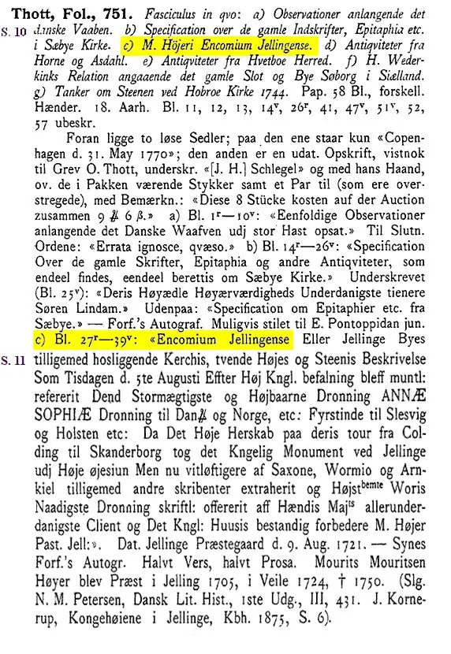
Auch die Additamenta 193 kvart konnte ich nach Vorbestellung bei meinem Besuch am Dienstag, 27.09.2022, in der Königlichen Bibliothek in Kopenhagen in Händen halten und fotografieren - Daraus habe ich diese pdf-Datei erstellt.
Die Handschrift Uldall 465 kvart kann ich hier als pdf-Datei anbieten, da ich sie bei meinem Besuch ebenfalls durchgesehen und fotografiert habe.
Außerdem werden seit 1785 unter der Signatur "Thott 1471 kvart" noch zwei völlig unterschiedliche Varianten "Thott 1471 a" und "Thott 1471 b" von "Encomium Jellingense" in der Königlichen Bibliothek in Kopenhagen verwahrt, die ich am Dienstag, 27.09.2022, in Händen halten und fotografieren durfte. Davon habe ich aber jeweils nur einige Fotos gemacht, wovon ich einige hier wiedergeben möchte.
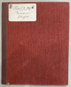 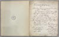 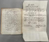 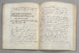
Thott 1471 a
Thott 1471 b
Ferner gibt es über die Digitale Sammlung des Nationalmuseums Kopenhagen - unter diesem Link - noch diese weitere Abschrift von "Encomium Jellingense" in 13 Einzelteilen in hochauflösender Qualität, die auch einzheln heruntergeladen werden kann.

Im Vejle Amts Aarbog, 1943, gibt es auf den S. 145-166 den Artikel mit dem Titel "Mourits Mouritsen Højer (Jellings Pris)" von Anders Bæksted (*16.08.1906 - 18.06.1968, Museumsinspektor und Runologe) zu diesem Werk. Der Autor gibt darin den Inhalt der Handschrift Thott 751 folio in Druckschrift wieder.
Von Peter Penz gibt es auf der Webseite des Jelling Projekt noch diese informative Abhandlung zur Thematik.
Von einer Person namens C. Raben findet sich diese Zeichnung der Jelling Monumente - frei von Urheberrechten - aus dem Jahr 1743 über die Webseite von "Statens Museum for kunst" in Kopenhagen. Das Original hat die Maße H: 98 mm / B: 128 mm.
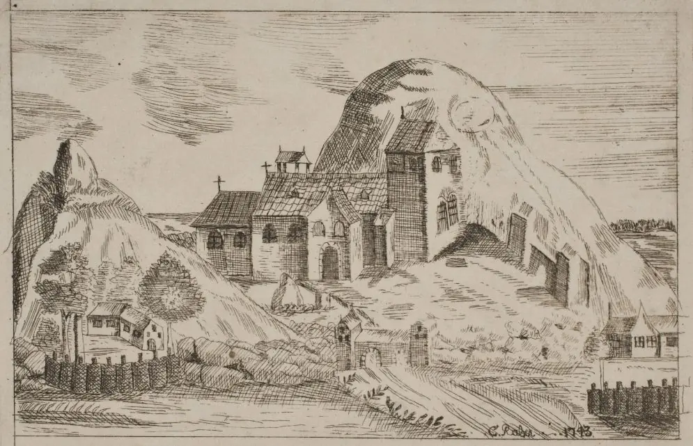
Dieses Blatt ist Teil einer Serie von 7 Landschaften, von denen sechs aus Simon Frisius' (1580-1629) Serie TOPOGRAPHIA VAIARUM REGIONUM kopiert sind, die nach einem Modell von Matthias Bril (1550-1584) ausgeführt und 1611 von Hendrick Hondius (*09.06.1573 - 1650, niederländischer Verleger, Zeichner und Kupferstecher) veröffentlicht wurde.
Erik Pontoppidan (der Jüngere, *03.09.1698 - 20.12.1764, dänischer Theologe, Prediger, Historiker und Autor)
 Bildquelle:
Wikipedia - Lizenz:
Public Domain
Bildquelle:
Wikipedia - Lizenz:
Public Domain
schreibt 1730 in seinem deutschsprachigen Werk "THEATRUM DANIAE VETERIS ET MODERNAE. Oder: Schau-Bühne Des alten und jetzigen Dännemarcks" auf der S. 348 bis 350 über den Ort Jelling, seine Runensteine und seine Könige und bringt dazwischen diese Zeichnung und auf der S. 349 die Inschrift.
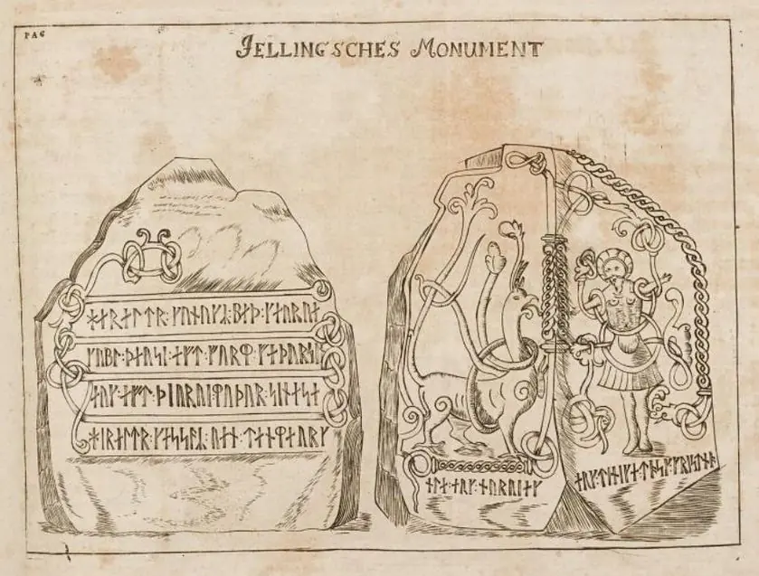
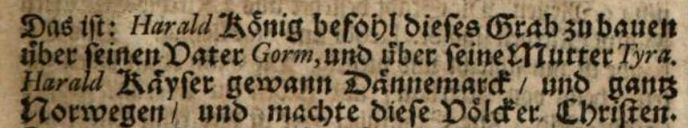
Erik Pontoppidan schreibt in einem weiteren Werk von 1763 "Den Danske Atlas" - Band I - Cap. 1, S. 3 (S. 3 - Fußnote zu * in der pdf-Datei) "...Paa Kong Gorms navnkundige Grav-Steen Jelling, staaer med Rune Bogstaver, Tanmaurk og andensteds Tanmarku". In diesem Band, nun in Kapitel VI, kommt er auf der S. 95 (S. 14 in der pdf-Datei) ganz kurz auf die Hochzeit von Gorm und Thyra zu sprechen und auf der nachfolgenden S. 96 (S.15 in der pdf-Datei) berichtet er noch zu dem großen Runenstein von Harald Blauzahn (mit Tafel IX - Bildliche Wiedergabe des großen Runensteins mit Inschrift - von Jonas Haas (1720 - 10.04.1775, Kupferstecher) - die beruht auf einem Holzschnitt von Jon Skonvig).
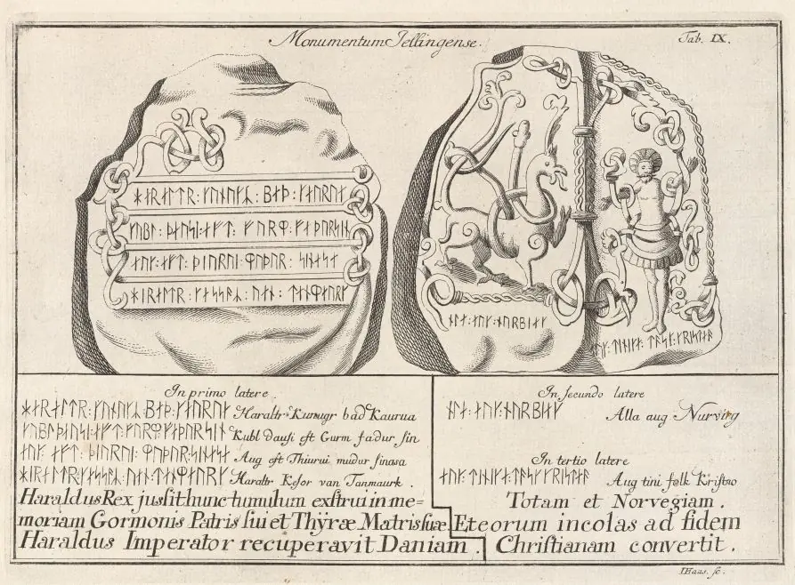
In seinem Band V, 2. Bind, Cap. 10, macht er auf der 987-89 (S. 30 (c) in der pdf-Datei) und auf der S. 998 Ausführungen zu Jelling. Dort schreibt er u.a.: "Der zweite Stein mit Runenschrift, der von der Beerdigung von König GORMS und Königin TYRE DANEBODS in diesen Hügeln zeugen, steht aufrecht auf dem Kirchhof vor dem Eingang der Kirche, aber ob er ursprünglich dort stand ist unbekannt. Den kleineren, recht schlichten Stein hat König GORM zweifellos zu seinen Lebzeiten geschnitzt und war für seine Königin als Denkmal gedacht..." und weiter: "Zur Zeit von König FRIDERICH II. war der große Stein im Boden versunken, aber der berühmte Lehnsmann von Koldinghuus, Caspar Markdaner (siehe oben), ließ ihn 1586 ausgraben und aufstellen, worauf er eine Tafel mit einer vergoldeten Inschrift anbringen ließ im Chor der Kirche, die bis zum Brand der Kirche im Jahr 1679 sichtbar war."
Mehrere Jahre lang reiste Søren Abildgaard (*18.02.1718 - 02.07.1791, Zeichner, Kupferstecher und Geologe) jeden Sommer innerhalb Dänemarks, um Denkmäler zu zeichnen. Dafür erhielt er vom König eine kleine jährliche Zahlung von 300 RDL. Ziel war vermutlich eine größere Veröffentlichung mit Abbildungen in Form von Stichen. So weit kam das Projekt jedoch nie. Dennoch sind bis heute über 800 Zeichnungen und Stiche erhalten.
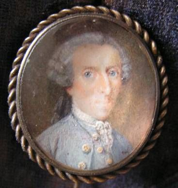
Bildquelle: JellingprojektetEine dieser Sommerreisen führte Abildgaard am 11. Juli 1771 nach Jelling, um die Denkmäler und die beiden Runensteine zu zeichnen. Nachdem er sich im Pfarrhaus einige Dokumente aus dem 15. bis 17. Jahrhundert angesehen hatte, ging er zur Kirche und zu den Hügeln, um sie zu beobachten und zu untersuchen. Die Beschreibung in seinem erhaltenen Notizbuch ist in ihrer Präzision typisch für Abildgaard. Die Jelling-Steine werden nur kurz erwähnt, aber das liegt daran, dass er mehrere Skizzen und Reinzeichnungen der beiden Runensteine angefertigt hat. Er fertigte auch eine Skizze für einen Prospekt der Kirche zwischen den Hügeln an, die er 1773 mit Feder und grauem Aquarell zeichnete - Originalgröße 38 x 23 cm - (Nr. 600).
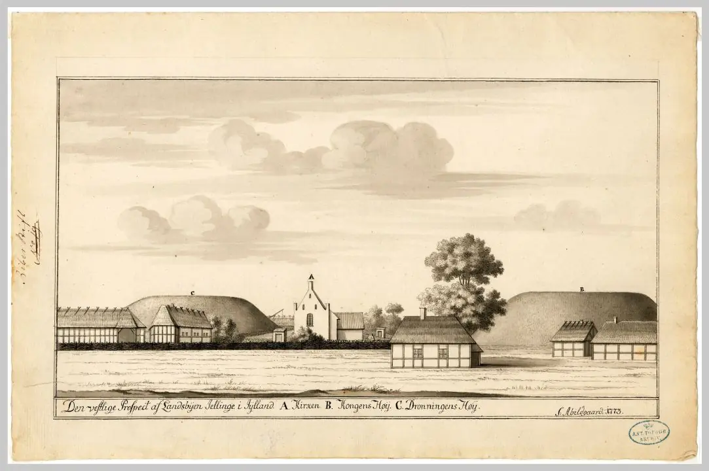
Quelle: Digitale Sammlung des Nationalmuseums in Kopenhagen - Lizenz: CC-BY-SA
Eine zweiseitige Notiz von ihm aus dem Jahr 1776 - Originalgröße 14 x 20 cm - bezieht sich auf eine ältere Lesung der Inschrift von B. Grauer, Notar aus Tondern, 1737 (Nr. 599) - siehe unten..

#/media/Datei:Fotoreproductie_van_een_schilderij,_voorstellende_een_portret_van_Christian_Friis_til_Kragerup_Christian_Friis_(til_Kragerup)_(titel_op_object),_RP-F-2001-7-742-16.jpg){kind=link}


_from_1928.png){kind=link}


Quelle: Digitale Sammlung des Nationalmuseums in Kopenhagen - Bild 1 - Bild 2 jeweils Lizenz: CC-BY-SA
Er bezieht sich hier auf das 1734 erschienene Werk von B. Grauer, Notar aus Tondern, mit dem Titel "Gründliche und ausführliche Erklärung Derer Heydnischen und in specie Runischen Götzen-Bilder, Thieren, Figuren und Gotho-Runischen Characteren, Welche auf dem im Jahr 1734. den 21 April bey Gallehus gefundenen gülden sogenannten Heiligthums- oder Götzen-Dienstes-Horn sich repräsentiren". Ab der S. 91 finden sich seine Informationen zu den Runensteinen (Details siehe bei den beiden Runensteinen).
Poul Grinder-Hansen (*30.12.1956, dänischer Historiker, Museumskurator undVerfasser) merkt in seinem Buch "Søren Abildgaard (1718-1791) Fortiden på tegnebrættet" - 2010 - zur Nr. 599 auf der S. 533 an, dass man an dieser Notiz, das eigenhändige Abzeichnen der Runenzeichen durch Søren Abildgaard erkennen könne, wie gründlich er sich auf seine Arbeit mit den Jelling Monumenten vorbereitet habe. Die zu Werken von Abildgaard in Klammer gesetzten Nummern beziehen sich jeweils auf diesen Katalog.
Weiterhin hat er diese undatierte und unsignierte Skizze
von dem Runenstein von
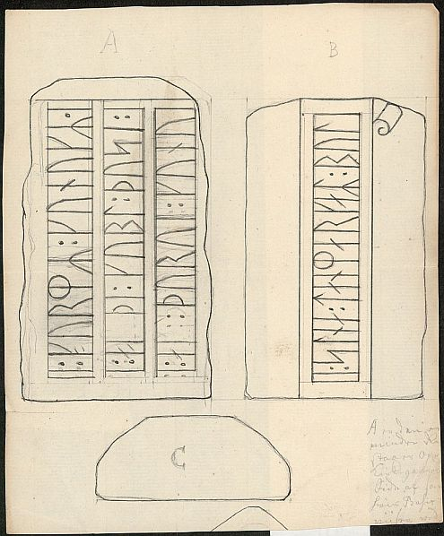
Quelle: Digitale Sammlung des Nationalmuseums in Kopenhagen - Lizenz: CC-BY-SA
Auch dieses eng beschriebene Blatt - Originalgröße 21 x 33 cm - hat Søren Abildgaard geschaffen. Es ist mit zahlreichen Texten zu den Inschriften und den Runenzeichen beschriftet. Aufgrund der ordentlichen Größe hier zunächst nur als Miniaturansicht, die aber durch Mausklick vergrößert angezeigt wird.

Quelle: Digitale Sammlung des Nationalmuseums in Kopenhagen - Lizenz: CC-BY-SA
Die Informationen zu der Inschrift auf dem kleinen Runenstein von Jelling finden sich im unteren Bereich. Unterhalb der 3 Linien mit Runen (Inschrift der Seite A) die seitlich geschrieben stehen findet sich dieser Text: "Disse Runer staar paa en Side af den mindre Runesteen opreist paa Jellings Kirkegaard." -Übersetzung: "Diese Runen stehen auf einer Seite des kleineren Runensteins, der im Jelling Kirchhof errichtet wurde." Die Inschrift der Seite B steht ebenfalls auf der Sesite, unter den 3 Linien der Seite A. Dazu hat er rechts unten (oberhalb seiner Unterschrift) diesen Text vermerkt: "Denne Rad Runer staaer paa den anden Side af samme mindre Runesteen." - Übersetzung: "Diese Runenreihe steht auf der anderen Seite desselben kleineren Runensteins."
Eine weitere Wiedergabe des kleinen Runensteins mit seiner Inschrift und kurzen ergänzenden Kommentaren zu einzelnen Runenzeichen hat Søren Abildgaard hier mit diesem Skizzenblatt erschaffen - Originalgröße 26 x 21 cm (Nr. 603) - das wohl als Vorlage für seine Reinzeichnung diente. Am linken Blattrand ist offenbar auch eine Teilskizze zu seinem o.a. Jelling Prospekt (Baum / Hügel) zu erkennen.
Quelle: Digitale Sammlung des Nationalmuseums in Kopenhagen - Lizenz: CC-BY-SA
Auf der Rückseite des Blattes findet sich eine gleichartige Wiedergabe des großen Runensteins Jelling 2 mit Notizen und Maßangaben.
Quelle: Digitale Sammlung des Nationalmuseums in Kopenhagen - Lizenz: CC-BY-SA
Hier seine Reinzeichnung - Originalgröße 22 x 26 cm (Nr. 604) - zum kleinen Runenstein.

Quelle: Digitale Sammlung des Nationalmuseums in Kopenhagen - Lizenz: CC-BY-SA
Aufgrund der ordentlichen Größe auch hier zunächst nur als Miniaturansicht, die aber durch Mausklick vergrößert angezeigt wird. Unter der Zeichnung findet sich der folgende Text: "
Übersetzung: "A und B stellen beide Seiten des kleineren Runensteins dar, der aufrecht im Jelling Kirchhof in Tyrrild Herred steht. Abbildung C stellt den Querschnitt des Steins dar. Auf der Seite A, die flach ist und drei Runenlinien aufweist, sind einige Runen in der zweiten und dritten Zeile abgeplatzt. Auf der Seite B, deren Oberfläche gebogen ist und drei Teile hat, befindet sich eine Runenlinie, die mit einem breiten Rand oder Band versehen ist; es scheint ungewiss, ob das letzte Wort in dieser Linie zwei oder drei Runen hat, sollte der letzte Strich ein Zeichen sein, dann gibt es oder , denn das Zeichen an seinem oberen Ende ist undeutlich, ist es aber kein Zeichen, sondern nur ein Strich, der zum Rahmen der Runenlinie gehört, dann hat das letzte Wort nur 2 Runen, A(nn)o 1771. S: Abildgaard."
Seine Reinzeichnung und auf deren Rückseite der ergänzende Text mit dem Steinquerschnitt zum großen Runenstein habe ich hier aufbereitet - Originalgröße 26 x 42 cm (Nr. 605).


Quelle: Digitale Sammlung des Nationalmuseums in Kopenhagen - und hier - Lizenz jeweils: CC-BY-SA
Der Text auf der rechten Seite lautet: "Tegningerne A og B viise de Figurer og Runer, som sees paa den største Runesteen, hvilken staaer paa Jellinge Kirkegaard, samme har trende Planer eller flade Sider som støde sammen og giver Steenen, som er af haard Kamp, en spidsagtig Figur oven til, hvis Grunde Flade er Triangelagtig, saaledes som den her neden tegnede Figur C udviiser. Tegningen A viiser den bredeste Side af Stenen med fire Rune Linneder, i den fierde Linned i det andet Ord støde de tvende første Runer sammen for oven, og synes at kunne give Anledning til at tvivle, om det skal være [ ] eller [ ], men da det ved nøje Betragtning erfares at Skraa Strægen paa den første Rune i dette Ord naar op til det øverste, og der støder ganske nær ind paa næste Rune, og at samme Skraa Stræg ikke gaar tvers over Runens perpendicular Stræg og hen paa den anden Side, hvor der er en Grub eller Ujevnhed i Steenen, saa bliver det denne Rune [ ] og ikke [ ]. Den fierde Rune i dette samme Ord har kiendelig denne Figur [ ], som synes at betyde [ ]. Ligeledes i det tredje og næste Ord synes tydelig to Runer at være samlet i én, saaledes [ ] i steden for [ ]. I det fierde Ord i samme Linned synes disse Runer [ ] at være forkortede saaledes [ ].- Tegningen B viiser de øvrige tvende Sider ad Stenen med de der udi udhugne Figurer og Runer. Paa den Side, hvor det Menneske Billede staar, er i Rune Linneden neden under afstødte nogle Runer i et Rum af 14 ¾ Tomes Længde. En Tome-Maal i min Aftegning betyder en Fod eller en halv Alen i monumentet, hvilken proportion ieg sædvanlig bruger til monumenters Aftegning. A(nn)o 1771. S: Abildgaard
Übersetzt: "Die Zeichnungen A und B zeigen die Figuren und Runen, die auf dem größeren Runenstein zu sehen sind, der auf dem Jelling Kirchhof steht. Dieser hat zulaufende Flächen oder flache Seiten, die zusammenkommen und dem Stein, der aus hartem Material besteht, oben eine spitze Figur verleiht. Die flache Oberfläche ist dreieckig, wie die unten gezeichnete Abbildung C zeigt. Die Zeichnung A zeigt die breiteste Seite des Steins mit vier Runenlinien, in der vierten Linie im zweiten Wort kollidieren die zweiten ersten Runen darüber und scheinen Anlass zu Zweifeln zu geben, ob es sein sollte. Bei sorgfältiger Überlegung stellt man fest, dass die schräge Linie auf der ersten Rune in diesem Wort bis zur Spitze reicht und dass sie ziemlich dicht an der nächsten Rune anliegt und dass dieselbe schräge Linie nicht über die senkrechte Linie der nächsten Rune verläuft. Auf der Seite, wo es eine Vertiefung oder Unebenheit im Stein gibt, wird es diese Rune Die vierte Rune in demselben Wort hat eindeutig die Figur zu bedeuten scheint. Ebenso scheinen im dritten und nächsten Wort zwei Runen eindeutig zu einer zusammengefasst worden zu sein, also . Im vierten Wort in derselben Zeile scheinen diese Runen .- Zeichnung B zeigt die anderen beiden Seiten des Steins mit den darauf eingravierten Figuren und Runen. Auf der Seite, auf der das Menschenbild steht, sind in einem Raum von 14 ¾ Tomme Länge (Anm.: 1 Tomme = 2,62 cm) einige Runen in die darunter liegende Runenline eingearbeitet. Ein Tommemaß bedeutet in meiner Zeichnung einen Fuß oder eine halbe Elle auf dem Stein, welches Verhältnis ich normalerweise zum Markieren von Denkmälern verwende. A(nn)o 1771. S: Abildgaard."
Quelle: Søren Abildgaard - Runensteine - 1771 - Søren Abildgaard i Jelling 1771
Literaturhinweis: Poul Grinder-Hansen - Buch mit dem Titel: Søren Abildgaard (1718-1791) Fortiden på tegnebrættet - 2010 - S. 533 - 538 (Nr. 599-605)
Ergänzend bleibt anzumerken, dass Søren Abildgaard auch noch Notizen zu Jelling anlässlich seines Besuches vor Ort in seinem Dagbog IV von 1771 auf den S. 8 bis 15 aufgenommen hat. Seine Tagebücher befinden sich heute im Antiqvarisk-Topografisk Arkiv in Kopenhagen.
Hier habe ich eine pdf-Datei mit den Tagebuchblättern 8-15 erstellt, die es vormals - heute leider nicht mehr - auf der Webseite von "Jellingprojektet" zur Ansicht gab.
Im Jahr 1797 kam der Buchdrucker Aosmann Isfron von Vejle nach Jelling, wo er mit größter Aufmerksamkeit die Hügel und die beiden Runensteine studierte, diese Raritäten und Reliquien des Alters, die sonst nirgends in den nordischen Königreichen und Ländern zu finden sind." Zu seinem Besuch fertigte er ein kleines Manuskript mit dem Titel "Monumentum Jellingense" an, das in Zeichnungen und Texten die Denkmäler so beschreibt, wie Isfron sie sah.

Das erhaltene Originalexemplar des Manuskripts befindet sich in der Handschriftensammlung der Königlichen Bibliothek in Kopenhagen und wird dort unter NKS 801 kvart vorgehalten (2 Teile - einmal das Manuskript - 10 beschriebene Seiten - und einmal die daraus entnommene Zeichnung der Monumente). Dieses Kleinod habe ich bei meinem dortigen Besuch am Montag, 26.09.2022, in Händen halten und fotografieren dürfen - siehe oben. Aus den einzelnen Fotos habe ich eine komplette Ausgabe des Originals als pdf-Datei erstellt.
Eine Kopie von Isfrons Werk gehört heute dem Nationalmuseum Kopenhagen. Die wurde digitalisiert und kann in 9 einzelnen Teilen hier abgerufen werden. Prof. Jens Jacob Asmussen Worsaae (*14.03.1821 - 15.08.1885, dänischer Archäologe und Vorgeschichtler - link-LIVES - Bestattungsprotokoll)
 Bildquelle: Fotografie
zw. 1863-1900 von Fotograf Budtz Müller
(*26.12.1837 -
30.12.1884) -
Det Kgl. Biblioteks billedsamling - Lizenz:
Public Domain
Bildquelle: Fotografie
zw. 1863-1900 von Fotograf Budtz Müller
(*26.12.1837 -
30.12.1884) -
Det Kgl. Biblioteks billedsamling - Lizenz:
Public Domainerhielt dieses Exemplar wohl 1861 von König Frederik VII. und übergab es später dem (damaligen) Museum für Nordische Altertümer in Kopenhagen. Der König selbst muss die Abschrift in Jelling erhalten haben.
Isfrons Zeichnungen zeigen die
Runensteine von
Die traditionellen
Namen der beiden Hügel,
Aus dem Manuskript geht hervor, dass
Isfron gebürtiger
Isländer war. 1797 war er Drucker in
Vejle,
muss aber schon früher nach
Dänemark gekommen sein, denn
1785 hatte er die Staatsbürgerschaft als Buchbinder in der
Stadt Fåborg auf Fünen erhalten, wo er im Staatsbürgerschaftsprotokoll unter
dem Namen
Aosmann Isfron aufgeführt ist.
Das
Originalexemplar von
Monumentum Jellingense ist mit einem Wasserzeichen
versehen, in dem zu lesen ist: C R VII ∙ HRS ∙ Engelsholm.
Engelsholm Papiermühle erhielt eine königliches
Erlaubnis zum Betrieb des Gewerbes von
Christian VII. und die Initialen
"H R S"
beziehen sich auf den Papiermeister Henrich Rudolf Schmith.
Das
Gut Engelsholm liegt knapp 10 km südwestlich
von
Jelling.
Es wurde 1731 vom unternehmungslustigen Kaufmann
Gerhard Hansen de Lichtenberg (*09.04.1697 -19.07.1764) erworben. Zu dieser Zeit
herrschte Papiermangel, und
Lichtenberg beschloss 1733, in
Randbøldal, nur wenige Kilometer vom Anwesen entfernt, eine
Papierfabrik zu errichten. Das Unternehmen hieß
Engelsholm und wurde an einen
niederländischen Papierhersteller verpachtet. Sie war ein großer
Erfolg und war bis 1799 die
einzige Papierfabrik in Jütland.
Bei meinem Besuch in der Königlichen Bibliothek in Kopenhagen am 27.09.2022 fand ich in der Hinterlassenschaft von P. G. Thorsen (*07.08.1811 - 06.05.1883, Bibliothekar, Runenforscher und Historiker) dieses Dokument, das mit der Jahreszahl 1796 versehen ist und augenscheinlich von Aosmann Isfron stammt.
Thorsens Nachlass (Bezeichnet als: P. G. Thorsens optegnelser, tegninger m.m. vedrørende runer og runemindesmærker - überführt aus der Kopenhagener Universitätsbibliothek 1929 - Gemäß Ministerialschreiben vom 04.03.1929; früher benannt als Additamenta 612 kvart) - findet sich heutzutage in der Königlichen Bibliothek unter NKS 3296 kvart (in mehreren einzelnen Pappschachteln). Den Fund habe ich in der Schachtel 17 - Æske 17: Tillæg til Sønderjylland, Nørrejylland - gemacht.

Handelt es sich dabei um ein bis dato unbekanntes Original von Aosmann Isfron? War er schon 1796 und nicht erst 1797 in Jelling? Ich habe versucht den Fall aufzuklären und deshalb in Kopenhagen den Dozent/Professor Michael Lerche Nielsen, Universität Kopenhagen, Institut for Nordiske Studier og Sprogvidenskab, Arkiv for Navneforskning og Runologi, heute (17.07.2023) um seine Einschätzung gebeten. Er meinte dazu: "Es ist schwierig, die verschiedenen Versionen zu durchschauen. Möglicherweise kopierte er es 1796 aus dem Werk von Ole Worm (Anmerkung: Dessen Danicorum Monumentorum Libri Sex, Hafniae = Kopenhagen, 1643). Er bezieht sich auf die Edda von Sæmund und Snorre ich vermute, dass er einst als Abschreiber isländischer Sagen gearbeitet hat. Er fertigte diese Kopien für Menschen an, die er beeindrucken wollte und von denen er sich Gefallen/Unterstützung erhoffte. Sie scheinen mit der gleichen etwas unbeholfenen Schönschrift geschrieben worden zu sein."
Von Martin Friedrich Arendt (* 22. Februar 1773 in Altona; April 1823 in der Nähe von Venedig/Italien, deutscher Botaniker und Altertumsforscher)
 Bildquelle: Eigenes Foto aus seiner Hinterlassenschaft im
Antikvarisk -Topografisk Arkiv - Public
Domain
Bildquelle: Eigenes Foto aus seiner Hinterlassenschaft im
Antikvarisk -Topografisk Arkiv - Public
Domain
Zu dem großen Runenstein von Harald Blauzahn haben sich diese Aufzeichnungen - teilweise mit 06.01.1808 datiert - von ihm im Archiv bewahrt.
Das ist offensichtlich eine Kopie der früheren Wiedergabe bei Erik Pontoppidan in seinem Werk von 1763 "Den Danske Atlas" - siehe oben. Einfach ausgeschnitten kann es meines Erachtens aber nicht sein, da der Eintrag "Tab. IX" oben rechts und die Signatur "Jonas Haas" rechts unten fehlt.
Von Martin Friedrich Arendt existiert zu Jelling auch noch diese tolle Zeichnung der Jelling Monumente, auf der er unten eine Datierung von 1811 vorgenommen hat und rechts oben auf seine Arbeiten zu Jelling im Mai 1804 verweist.

Der digitalen Sammlung des Nationalmuseums Kopenhagen entnommen - Lizenz: CC-BY-SA
Im Jahr 1814 hat J. J. Fyhn (Jens Jørgen Fyhn, *09.02.1788 - 25.02.1866, Lokalhistoriker, Maler - link-LIVES) ein ähnliches Bild wie Arendt, ein Aquarell mit dem Textzusatz: "Jelling Kirke mellem Gorms og Thyres Höie" gemalt. Die Jelling Monumente sieht man hier aus Richtung Norden. Auf dem mit "Thyras H." bezeichneten Hügel sieht man eine große Einsenkung an der Spitze - einen Brunnen.

Im April 1820 versuchten die Bauern in Jelling, einen Teich auf dem Nordhügel, auch Königin Thyras Hügel genannt, zu reinigen, da der Teich, dessen Wasser als Trinkwasser genutzt wurde, austrocknete. Die Bauern gruben von der Senke des Teiches aus einen Schacht durch den Hügel, doch statt auf die Quelle stießen sie auf mehrere große Steine. Die Steine wurden entfernt und darunter wurde eine große Grabkammer aus Eichenholz - 2,6 m x 6,75 m / ca. 17 qm - entdeckt. Die Arbeiten wurden eingestellt und die Königliche Kommission zur Erhaltung von Antiquitäten in Kopenhagen über die örtlichen Behörden benachrichtigt.
Prof. Finn Magnusen (* 27. August 1781 in Skálholt/Island; 24. Dezember 1847 in Kopenhagen, isländischer Philologe und Archivar- link-LIVES)
 Bildquelle:
Wikipedia - Lizenz:
Public Domain
Bildquelle:
Wikipedia - Lizenz:
Public Domain
war von Johan Bülow (*29.07.1751 - 22.01.1828, ehemaliger Hofmarschall - link-LIVES),
Bildquelle: Wikipedia - Lizenz: Public Domain
der 1793 in Kopenhagen beim jungen Kronprinz und späteren König Friedrich VI. (* 28. Januar 1768 - 3. Dezember 1839, König von 1808-1839)
Bildquelle: Wikipedia - Lizenz: Public Domain
in Ungnade gefallen war, auf dessen Gutshof Sanderumgård auf Fünen, auf dem Bülow seit 1793 dauerhaft lebte, eingeladen worden. Im letzten Teil seines Lebens war Bülow ein großer Förderer der Wissenschaften. Finn Magnusen kam bei ihm am 28.05.1820 an. Es war eine gemeinsame Reise von dort nach Jelling angedacht. Per Zufall erfuhren sie am Vorabend ihrer Abreise, am 31.05.1820, von den Ereignissen in Jelling. Am Donnerstag, 01.06.1820, morgens um vier Uhr starten sie in Richtung Jelling. In Odense schloss sich ihnen noch J. H. T. Hanck (Johan Henrik Trutzschler Hanck - *26. Januar 1776 - 23. Juli 1840 dänischer Zeichner, Maler, Assistenzprofessor - link-LIVES) an. Am Abend kamen sie nach Vejle. Magnusen sprach noch am Abend mit Richter Hersleb, der ihm die Vorgänge in Jelling bestätigte und erklärte dass man die Arbeiten der Bauern habe bereits einstellen lassen.. Er sprach auch noch am gleichen Abend mit Capt. T. C. A. Bloch (Theodose Carl August Bloch, 1779-1829), der der Leiter der Straßenarbeiten bei Vejle war und in Jelling wohnte. Dieser und sein Chef, Oberst Andreas Gram (von) Heide (*20.04.1760 - 13.03.1829)
sollten noch eine außerordentlich große Rolle bei den folgenden Ausgrabungen erhalten. Da Johan Bülow sich am nächsten Morgen nicht wohl fühlte, reiste Magnusen mit Hanck ohne ihn nach Jelling. In diesen Tagen herrschte sehr schlechtes Wetter, es regnete viel und es blies ein starker Wind. In Jelling fuhren sie zuerst zum Pfarrhof und sprachen mit Pfarrer Christian Lunov Ferslev (1769-1831). Er gab ihnen einen kurzen Überblick über die Festellungen am Nordhügel und verwies sie an den Pfarramtmann Christen Sørensen (1781-1853). Der willigte im Gespräch darin überein Magnusen bei den angedachten Untersuchnungen zu unterstützen. Danach reiste die Herren zurück nach Vejle. Am nächsten Morgen war Johan Bülow soweit genesen, dass Capt. T. C. A. Bloch die dreiköpfige Gesellschaft nach Jelling fuhr. Das Wetter war schlecht und am Nordhügel musste man feststellen, dass Erdreich in großen Klumpen in die Grabkammer herabgesunken war.
Mit Hilfe von Capt. T. C. A. Bloch wurde das Öffnungsloch erweitert, so dass man hinabsteigen und das Grab untersuchen konnte. Eine vollständige Untersuchung der Kammer war unmöglich, da weiterhin Schlamm und Kies aus dem Öffnungsloch an der Spitze des Hügels in die Baugrube rutschten. Arbeiter versuchten, die Füllmassen zu entfernen, und schließlich stieg Prof. Finn Magnusen in die Grabkammer von Königin Thyra hinab. Es war mit Erde gefüllt, was den Überblick erschwerte. Es fiel jedoch auf, dass vier Deckenbalken zerschnitten worden waren, was als früherer Einbruchsversuch in die Kammer gedeutet wurde. Die Vertiefung oben auf dem Hügel, in der sich das Regenwasser zu einem Teich gesammelt hatte, war also nicht auf natürliche Weise entstanden.
Die Antikenkommission plädierte für eine Untersuchung der Grabkammer, und die Leitung wurde dem Chef des Straßenkorps, Oberst Andreas Gram (von) Heide, übertragen, der mit Hilfe seiner Untergebenen auf der Grundlage strenger Anweisungen für die Arbeiten ab 15.09.1820 verantwortlich war. Diese Untersuchungen wurden am 04. November 1820 eingestellt, waren aber noch nicht ganz abgeschlossen und wurden deshalb im Juli 1821 mit finanzieller Unterstützung von König Frederik VI. (*28.01.1768 - 03.12.1839, König von 18081839) wieder aufgenommen.

Dies ist eine originale Planzeichnung von Capt. T. C. A. Bloch von 1820 zu den Untersuchungen des Nordhügels - Original heute im Antikvarisk -Topografisk Arkiv in Kopenhagen - Scan aus "Gåden om Kong Gorms Grav, Historien om Nordhøjen i Jelling" von Knud J. Krogh (Herning 1993), Frontispiz / Fig. 1.
Von J. H. T. Hanck wurde dieses Aquarell am 03.06.1820 als nicht maßstabsgerechte Plan- und Querschnittskizze zu dem Brunnenloch auf dem Nordhügel angefertigt, so dass man sich auch heutzutage eine Vorstellung davon machen kann, wie sie das damals antrafen.

Original heute im Antikvarisk -Topografisk Arkiv in Kopenhagen - Bild aus dem Artikel von Henrik Breuning-Madsen, Mads Kähler Holst und Peter Steen Henriksen - Brønden p å toppen af Nordhøjen i Jelling (Nationalmuseets Arbejdsmark, 2010, S. 192-203)
Prof. Finnur Magnusson und Christian Jürgensen Thomsen (*29. Dezember 1788 - 21. Mai 1865, war ein dänischer Altertumsforscher und Begründer des Dreiperiodensystems, nach dem die europäische Urgeschichte in Steinzeit, Bronzezeit und Eisenzeit zu unterteilen ist - Bestattungsprotokoll Kopenhagen - link-LIVES)
 Bildquelle:
SMK Open - Lizenz:
Public Domain
Bildquelle:
SMK Open - Lizenz:
Public Domain
von der Antikenkommission haben dann die vollständige Ausräumung der Grabkammer sorgfältig beschrieben. Unter den wenigen Grabfunden, die sich erhalten hatten, war der berühmte kleine Silberbecher mit einem Tierornament, das zum Kennzeichen für den Jellingstil werden sollte. Der Becher hat die Maße 4,5 x 4,3 cm und ein Fassungsvermögen von nur ca. 35 ml. Er wurde am 18. September 1820 bei der Untersuchung der Grabkammer in Nordhügel in Jelling entdeckt. Bis heute ist der Becher der bekannteste Fund aus Jelling. Trotz des langjährigen Verbleibs im Hügel und der anschließenden, etwas unsachgemäßen Renovierung bleibt der Becher ein beeindruckendes Stück Silberschmiedearbeit und ein edler Ausdruck der künstlerischen und metalltechnologischen Fähigkeiten der Wikingerzeit.
Die erste Zeichnung des Bechers aus dem Kammergrab im Nordhügel wurde von Capt. T. C. A. Bloch am 18.09.1820 ausgeführt (Bildquelle: Jellingprojektet)


Bildquelle rechts: Digitale Sammlung des Nationalmuseums Kopenhagen - Foto: John Lee - Lizenz: CC BY-SA 4.0
 Abwicklung
der kompletten Ornamentik - frei von Urheberrechten.
Abwicklung
der kompletten Ornamentik - frei von Urheberrechten.
Der Becher kann über diesen Link - Digitale Sammlung des Nationalmuseums Kopenhagen - stufenlos gedreht werden und ermöglicht so eine komplette Ansicht der rundherum verlaufenden Ornamentik!
Informationen zu dem kleinen Silberbecher finden sich z.B. auf der Webseite des Jellingprojektes (mit Unterseiten - Bægerets funktion / Bægerets stil / Bægerets tilstand).
Der Ausgrabungsbericht erhielt den Titel "Efterretninger om Mindesmærkerne ved Jellinge og de derved i Aarene 1820 og 1821 foretagne Undersøgelser m. m.". Darin präsentierten Prof. Finnur Magnusson und Christian Jürgensen Thomsen die Ergebnisse der Ausgrabungen 1820 und 1821 in der Zeitschrift Antiquarieske Annaler, Band IV.I - 1823 (Ich finde das nur unter 1827!). Der Bericht wurde 1823 auch in Form eines kleinen Büchleins separat veröffentlicht (als Nachdruck: Aarhus 1973, Wormianum).
 Bildquelle:
Digitale
Sammlung des Nationalmuseums Kopenhagen - Lizenz: Public
Domain
Bildquelle:
Digitale
Sammlung des Nationalmuseums Kopenhagen - Lizenz: Public
Domain
Dieses Exemplar gehörte J. H. T. Hanck (Johan Henrik Trutzschler Hanck - *26. Januar 1776 - 23. Juli 1840 dänischer Zeichner, Maler, Assistenzprofessor - link-LIVES), der bei den Ausgrabungen selbst dabei war und der es ausweislich seines handschriftlichen Eintrages (links oben) am 08. Juli 1823 von Prof. Magnusen auf dem Gutshof Sanderumgård verehrt bekam. Später hat er noch diese hübsche, selbstgefertigte Zeichnung der Jelling Monumente, datiert auf das Jahr 1831, eingeklebt.
In der o.a. Abhandlung und in dem separaten Büchlein sind jeweils diese 2 Tafeln - Zeichnungen von H.G.F. Holm (Heinrich Gustav Ferdinand Holm, *23. April 1803 in Berlin - 01. Mai 1861, Künstler und Kupferstecher - link-LIVES - Bestattungsprotokoll Kopenhagen) - eingebunden, die einen Querschnitt durch den Grabhügel und einige Funde (dazu Zeichnungen der Inschriften/Runensteine von Læborg und Bække zeigen).

Digitale Sammlung des Nationalmuseums Kopenhagen - Lizenz: CC BY-NC-ND 4.0

Eigener Scan der Wiedergabe in Hedensk og Kristent, Fundene fra den kongelige gravhøj i Jelling - von Knud J. Krogh og Bodil Leth-Larsen, 2007, S. 55
Quelle: / Jellingprojektet - 1821 - Gravkammeret i Nordhøjen
Eine kleine Auswahl der Fundstücke aus dem Nordhügel habe ich hier zur Ansicht.
Dieses am 21.09.1820 gefundene Bruchstück einer geschnitzten und (beidseits gleichartig) bemalten Eichenplanke hat im Original die Maße 27,7 x 12,4 cm. Die Dicke variiert zwischen 0,82 und 0,96 cm - Fundnummer: NM CCCLXXVI.
Die geschnitzte Holzfigur hat im Original die Maße H: 15,5 cm / gr. Breite 13 cm / Dicke ca. 0,5 bis 0,6 cm - Ansicht von beiden Seiten - Fundbericht am 27.09.1820 an Oldsagskommissionen - Fundnummer: NM CCCXXVIII
Der Vogelkopf hat die Maße 4,2 cm lang und 2,3 cm breit bei einer Höhe von 3,4 cm - Fundbericht am 27.09.1820 an Oldsagskommissionen - Fundnummer NM CCCLXXIIIb (ursprünglich NM CCCLXXIV)
Der Beschlag mit kreuzförmiger Ornamentik in der Mitte ist nur 0,06 cm dick, aus reinem Kupfer mit Spuren von Vergoldung und hat die Maße 6,6 x 6,4 cm - Fundnummer NM CCCLXXX
Quellen: Digitale Sammlung des Nationalmuseums Kopenhagen - Lizenz jeweils: CC BY-NC-ND 4.0 / "Kreuzbeschlag" eigenes Foto vom 21.08.2013
Literaturhinweise: "Gåden om Kong Gorms Grav, Historien om Nordhøjen i Jelling" von Knud J. Krogh, 1993 / "Hedensk og Kristent, Fundene fra den kongelige gravhøj i Jelling", von Knud J. Krogh og Bodil Leth-Larsen, 2007
Carl Christian Rafn (*16.01.1795 - 20.10.1864, Altertumsforscher - link LIVES - Bestattungsprotokoll)
 Bildquelle:
Wikipedia - Lizenz:
Public Domain
Bildquelle:
Wikipedia - Lizenz:
Public Domain
veröffentlichte 1852 den Artikel "Bemærkninger om Gorm den Gamles og Thyre Danabods Mindestene i Jellinge" in der Zeitschrift Annaler for nordisk Oldkyndighed og Historie 1852, S. 301-319.
Er beschreibt darin aber komischerweise den Runenstein Jelling 2 - Harald Blauzahns Runenstein und bringt auf Tafeln mit Zeichnungen der Steinseiten, wobei die Textseite fehlt, aber die Tierseite zweimal vorkommt und dann noch die Christusseite - ohne den Urheber zu nennen!
Im Jahr 1859 hat Prof. Jens Jacob Asmussen Worsaae (*14.03.1821 - 15.08.1885, dänischer Archäologe und Vorgeschichtler - link-LIVES - Bestattungsprotokoll)
Bildquelle:
Königliche Bibliothek Kopenhagen - Lizenz:
Public Domain
das Buch mit dem Titel "Nordiske oldsager i det Kongelige museum i Kjöbenhavn" herausgebracht. Darin finden sich unzählige Zeichnungen/Radierungen von Prof. Julius Magnus Petersen (*04.09.1827 - 31.01.1917, Archäologischer Zeichner und Restaurator - link-LIVES - Bestattungsprotokoll)
 Bildquelle: Fotografie
von 1903 von Fotograf Marius Christensen
(*24.6.1874 -
25.6.1907) -
Det Kgl. Biblioteks billedsamling - Lizenz:
Public Domain
Bildquelle: Fotografie
von 1903 von Fotograf Marius Christensen
(*24.6.1874 -
25.6.1907) -
Det Kgl. Biblioteks billedsamling - Lizenz:
Public Domain
von unterschiedlichen Fundstücken der verschiedenen zeitlichen Epochen. Auf den S. 114 und S. 115 sind ausgewählte Funde aus dem Nordhügel in Jelling aus den Jahren 1820-21 wiedergegeben.


Der Nachlass von Prof. P. G. Thorsen (*07.08.1811 - 06.05.1883, Bibliothekar, Runenforscher und Historiker - link-LIVES - Artikel: Levnedsbeskrivelser af de ved Københavns Universitets Firehundredaarsfest promoverede Doktorer, Illustreret Tidende 1882, Nr. 1235 - vom 27.05.1833 / Grabstein in Varde / Eheschließung in Varde am 19. August 1848)
 Bildquelle: Fotografie zw. 1863-1900 von
Fotograf Budtz Müller (*26.12.1837 -
30.12.1884) -
Det Kgl. Biblioteks billedsamling - Lizenz:
Public Domain
Bildquelle: Fotografie zw. 1863-1900 von
Fotograf Budtz Müller (*26.12.1837 -
30.12.1884) -
Det Kgl. Biblioteks billedsamling - Lizenz:
Public Domain
Bezeichnet als: P. G. Thorsens optegnelser, tegninger m.m. vedrørende runer og runemindesmærker - überführt aus der Kopenhagener Universitätsbibliothek 1929 - Gemäß Ministerialschreiben vom 04.03.1929; früher benannt als Additamenta 612 kvart - befindet sich heutzutage in der Königlichen Bibliothek unter NKS 3296 kvart (in mehreren einzelnen Pappschachteln). In der Pappschachtel mit der Nummer 17 fand ich bei meinem dortigen Aufenthalt am Dienstag, 27.09.2022, insgesamt 13 Dokumente / Zeichnungen die sich mit Jelling befassen. Von Magnus Petersen waren neben Zeichnungen der beiden Runensteine auch diese schöne Ansichte des Gesamtkomplexes von Jelling verwahrt, die er auf den 03. September 1871 datiert hat.

Daneben fand ich dort auch diese Zeichnung, die rechts unten die Signatur "P.G. Thorsen, 14. Sept. ?0" trägt. Die hat er nicht selbst gezeichnet, sondern die stammt von Magnus Petersen, der viel für ihn gezeichnet hat. Das Original wird in der Digitalen Sammlung des Nationalmuseums Kopenhagen mit dem Titel "Jelling kirke og høje. Prospekt fra vest" und dem Hinweis "Efter Magnus Petersen" gezeigt (Lizenz dort: Public Domain). Der Lithograf hingegen ist unbekannt.

Außerdem fand sich bei seinen
Unterlagen
in
der Königlichen Bibliothek
in
Kopenhagen am 27.09.2022 noch diese 3-seitige
Aufzeichnung die den Namen
Søren Abildgaard trägt. Das sieht mir schwer nach einer Abschrift
von dessen Aufzeichnungen aus, die
P. G. Thorsen selbst angefertigt haben dürfte. Dazu muss mal noch ein
paar Recherchen / Schriftvergleich usw. anstellen.


Prof. Ludv. F. A. Wimmer (*07.02.1839 - 29.04.1920, Philologe und Runenforscher - link-LIVES - Politiets registerblade - Bestattungsprotokoll)
 Bildquelle:
Fotografie zw. 1877-1900 von Fotograf Hansen & Weller
-
Det Kgl. Biblioteks billedsamling - Lizenz:
Public Domain
Bildquelle:
Fotografie zw. 1877-1900 von Fotograf Hansen & Weller
-
Det Kgl. Biblioteks billedsamling - Lizenz:
Public Domain
hat seine
jahrelangen Aufzeichnungen der
"Kgl.
Bibliotek" in
Kopenhagen
überlassen. Ein
Verzeichnis darüber wurde 1915 in Buchform herausgegeben
-
In seinen Unterlagen in der Bibliothek befinden sich unter "III - Originaltegninger af de danske Runemindesmærker, udførte paa Undersøgelsesrejserne af Magn. Petersen og kontrollerede paa Stedet af Ludv. Wimmer, samt Prøvetryk af de paa Grundlag af de nævnte Tegninger, Aftryk o. s. v. til De danske Runemindesmærker" udførte Afbildninger med Wimmers Rettelser"


seine Aufzeichnungen zu den Runensteinen von Jelling unter der Nr. 1-2, die ich bei meinem Besuch am 27.09.2022 sichten durfte - siehe Infos zu dem jeweiligen Runenstein.
Darunter befand sich auch diese tolle Zeichnung "Jellinge Höjene" von Magnus Petersen - die er auf 1878 datiert hat - fotografieren durfte.
Außerdem befanden sich in Wimmers Fundus noch diese beiden Dokumente. Es ist zum einen eine Planzeichnung der Jellingmonumente aus dem Jahr 1878 von Magnus Petersen.

Daneben noch eine Zeichnung - augenscheinlich eine Kopie des Rantzau Prospekt der Jelling Monumente von 1591 - auf Transparentpapier, das im oberen linken Eck eine Notiz von einem Herrn Fr. Burg beinhaltet: "Universitätsbibliothek Kiel Cod.?? S.H. 181 F, Abteilung II, Fol. 36/37 ?? gezeichnet von F. Burg, 21.?.1800, Hamburg".
Dazu gehört eine Postkarte, die
in Hamburg am 28.05.1900 abgestempelt wurde.
Darin bezieht sich Herr Fr. Burg auf den "Kieler
Codex S.H. 181 G" und die Ausgabe von 1597 von
Henrik Rantzau
(*11.03.1526 - 31.12.1598, Statthalter des dänischen Königs für die königlichen
Anteile an den Herzogtümern Schleswig und Holstein) in seiner Abhandlung
"Cimbricae
Chersonesi descriptio" (Darin
Tab. XII), die 1739 im Band 1
des 4-bändigen Werkes "Monumenta
inedita rerum Germanicarum, praecipue Cimbricarum et Megapolensium"
-
Bildquelle: Wikipedia - Lizenz: Public Domain
Der Absender der Postkarte war offenbar Jacob Fritz Burg (*27.03.1860 - 16.11.1928, Bibliothekar in Hamburg)

... hier geht's noch irgendwann weiter
Im Jahr 1994 wurden die Monumente in Jelling in die UNESCO-Liste des Welterbes aufgenommen. Davon zeugt diese Urkunde, die in dem Museum "Kongernes Jelling" ausgehängt ist.
Eigenes Foto
Jelling Monumente und die Runensteine auf Briefmarken aus aller Welt
Durch Post Danmark kam 2003 ein sog. Prestige Heft mit dem Titel "Kongernes Jelling" - dreisprachig Englisch/Deutsch/Dänisch - in einer Auflage von 40.000 Stück heraus (15 x 22,5 cm). Neben vier Briefmarken finden sich über etliche Seiten Berichte über die einzelnen Monumente und dazwischen verschiedene zeichnerische Wiedergaben auf Transparentpapier. Der damalige Wissensstand ist heute aber bereits wieder überholt.
Erstausgabe 07.11.2003 - Michel Nummern 1350-1353
Jelling war bei Post Danmark aber bereits 1953 und 1977 ein Thema gewesen. Damals kamen diese beiden Briefmarken heraus.
Erstausgabe 05.09.1953 - Der Runenstein von Harald Blauzahn - Michel Nummer 341 / Erstausgabe 30.06.1977 - Kirche von Jelling, Hügelgräber - Michel Nummer 644
Natürlich gab es diese Briefmarken zu Jelling auf verschiedenen Umschlägen usw. wie man oben an einer kleinen Auswahl sieht.
Im Rahmen der Thematik "UNESCO Welterbe Stätten in Dänemark" kam am 02.01.2020 nochmals eine (selbstklebende) Briefmarke zu Jelling von Post Danmark heraus, die eine fotografische Aufnahme der Palisadenrekonstruktion - nördliche Reihe - zeigt.
Michel Nummer 2005
In den beiden Runenlinien am oberen Briefmarkenrand wird die Inschrift auf dem Runenstein Jelling 1 von Gorm, 1. Reihe - : kurmR : kunukR : - und 2. Reihe - : k(a)(r)þi : kubl : þusi : - wiedergegeben.
Bei der Gelegenheit kann ich auch auf diese Briefmarke von Post Danmark zum 400. Geburtstag von Ole Worm (*13.05.1588 - 31.08.1654, Arzt, Universalgelehrter und der Begründer der Runologie) verweisen.
Erstausgabe 18.02.1988 - Ole Worm (1588-1654), Runenforscher - Michel Nummer 916
Von Grenada, ein Inselstaat und der Name einer hierzu gehörigen Insel der Kleinen Antillen, gab es diese Briefmarke unter dem Thema "50 Jahre UNESCO: Kultur- und Naturerbe der Menschheit" am 03.04.1997, die die Kirche in Jelling mit Steinen der Schifssetzung zeigt - Michel Nummer 3386.
Der westafrikanische Staat Sierra Leone gab unter dem Thema "50 Jahre UNESCO: Kultur- und Naturerbe der Menschheit" am 24.03.1997 - Michel Nummer 2788 - diese Briefmarke heraus, die ein Foto - Blick zwischen den beiden Runensteinen auf den Südhügel - zeigt.
Außerdem gibt es noch briefmarkenähnliche Ausgaben mit Motiven zu Jelling, die ich hier habe.
Diese Briefmarken (und unzählige andere zur Thematik "Wikinger") befinden sich alle in meinem Besitz und wurden von mir selbst eingescannt (Bis auf Jelling 2020).
Post Danmark ist heute PostNord
Innerhalb der Digitale Sammlung des Nationalmuseums Kopenhagen kann man mit dem Suchbegriff "Jelling" aktuell (10.07.2023) insgesamt 728 Fotografien, Zeichnungen, Pläne usw. abrufen und bei Bedarf auch herunterladen.
Literaturhinweise:
Gåden om Kong Gorms Grav, Historien om Nordhøjen i Jelling - von Knud J. Krogh, 1993
Hedensk og Kristent, Fundene fra den kongelige gravhøj i Jelling - von Knud J. Krogh og Bodil Leth-Larsen, 2007
Anne Pedersen - Jelling im 10. Jahrhundert - Alte Thesen, neue Ergebnisse - in: Hg.: Hofmann/Kamp/Wemhoff - Die Wikinger und das fränkische Reich - Identitäten zwischen Konfrontation und Annäherung - MittelalterStudien Band 29 - Paderborn 2014 - S. 275 - 296
Anne Pedersen und Per Kristian Madsen - Jelling zur Zeit Harald Blauzahns - ein weit offenes Zentrum. in: Interaktion ohne Grenzen, Beispiele archäologischer Forschungen am Beginn des 21. Jahrhunderts, Band 2, 2017, S. 649-662
Auf den Webseiten des Nationalmuseum in Kopenhagen - Danmarks Kirker - kann man eine in dänischer Sprache gehaltene 143-seitige, bebilderte Abhandlung als pdf-Datei zur Baugeschichte/Innenausstattung der Kirche von Jelling aus dem Jahr 2022 abrufen. Diese Abhandlung ist nicht nur brandneu, sondern handelt auch den kompletten Jelling Komplex ab - Runensteine / Grabhügel / Schiffssetzung / Palisade / Kirche mit Wandgemälden / usw. - und alles mit tollen Fotos.
Durch das Jelling Projekt gab es eine Literaturliste zu Jelling von 1591 bis zum 09.02.2013 die 603 Einträge umfasste (davon 124 mit Verlinkungen zur Online Verfügbarkeit als pdf-Dateien / plus eine Ergänzungsliste). Ich habe bei Anne Pedersen - die mir die Listen als pdf-Dateien auf Anfrage im Dezember 2021 zugesandt hat - angefragt, ob ich die hier veröffentlichen darf - die Antwort steht noch aus!